NIST IR 7877 日本語訳
英語タイトル : BioCTS 2012: Advanced Conformance Test Architectures and Test Suites for Biometric Data Interchange Formats and Biometric Information Records日本語タイトル : BioCTS 2012：生体データ交換フォーマットおよび生体情報レコードのための高度な適合性試験アーキテクチャとテストスイート
公開日 : 2012-09-14
原文URL : https://csrc.nist.gov/pubs/ir/7877/final
翻訳編集 : 自動生成（有志による非公式の日本語訳）, 原文取得日 : 2026-10-31, 訳文 : 401 / 417 ブロック
[要約] NIST IR 7877 は、さまざまな生体データ交換フォーマット標準への実装の適合性を試験するために設計された生体の適合性試験ソフトウェア、BioCTS 2012 を説明する報告書です。ANSI/NIST-ITL 1-2011 向けの BioCTS 2012 は、NIST SP 500-295 に記載されたテストアサーションを用いて AN-2011 の実装を試験し、ISO/IEC 向けの BioCTS 2012 は、ISO と IEC の第一合同技術委員会第 37 小委員会が策定した生体データ交換フォーマットの実装を試験します。CBEFF のインスタンスに適合する生体情報レコード（BIR）の試験にも対応しており、AN-2011 向けの適合性試験は選択されたレコードタイプ（1、4、10、13、14、15、17）に限られます。標準のデータ構造と BioCTS の設計思想、試験アーキテクチャ、コード構造などのソフトウェア設計の詳細を示します。
［組織・プログラムのロゴ。ロゴのため、この非公式サイトには掲載していません。原本 PDF を参照してください。］
NISTIR 7877
NISTIR 7877
BioCTS 2012: Advanced Conformance Test Architectures and Test Suites for Biometric Data Interchange Formats and Biometric Information Records
BioCTS 2012: 生体データ交換フォーマットおよび生体情報レコードのための高度な適合性試験アーキテクチャとテストスイート
Fernando L. Podio
Dylan Yaga
Christofer J. McGinnis
Fernando L. Podio
Dylan Yaga
Christofer J. McGinnis
http://dx.doi.org/10.6028/NIST.IR.7877
http://dx.doi.org/10.6028/NIST.IR.7877
This page left intentionally blank
このページは意図的に空白としています
NISTIR 7877
NISTIR 7877
［米国商務省の紋章。公的な標章のため、この非公式サイトには掲載していません。原本 PDF を参照してください。］
BioCTS 2012: Advanced Conformance Test Architectures and Test Suites for Biometric Data Interchange Formats and Biometric Information Records
BioCTS 2012: 生体データ交換フォーマットおよび生体情報レコードのための高度な適合性試験アーキテクチャとテストスイート
Fernando L. Podio
Dylan Yaga
Christofer J. McGinnis
Fernando L. Podio
Dylan Yaga
Christofer J. McGinnis
Computer Security Division
Information Technology Laboratory
コンピュータセキュリティ部門
情報技術研究所
http://dx.doi.org/10.6028/NIST.IR.7877
http://dx.doi.org/10.6028/NIST.IR.7877
September 2012
2012年9月
U.S. Department of Commerce
Acting Secretary Rebecca M. Blank
米国商務省
Rebecca M. Blank 長官代行
National Institute of Standards and Technology
Patrick Gallagher, Under Secretary for Standards and Technology and Director
米国国立標準技術研究所
Patrick Gallagher、標準・技術担当商務次官兼所長
This page left intentionally blank
このページは意図的に空白としています
Reports on Computer Systems Technology
コンピュータシステム技術に関する報告書
The Information Technology Laboratory (ITL) at the National Institute of Standards and Technology (NIST) promotes the U.S. economy and public welfare by providing technical leadership for the Nation’s measurement and standards infrastructure. ITL develops tests, test methods, reference data, proof of concept implementations, and technical analysis to advance the development and productive use of information technology. ITL’s responsibilities include the development of technical, physical, administrative, and management standards and guidelines for the cost-effective security and privacy of sensitive unclassified information in Federal computer systems. This Interagency Report discusses ITL’s research, guidance, and outreach efforts in computer security, and its collaborative activities with industry, government, and academic organizations.
米国国立標準技術研究所（NIST）の情報技術研究所（ITL）は、国の計測・標準インフラストラクチャに対する技術的リーダーシップを提供することで、米国経済と公共の福祉を促進しています。ITL は、情報技術の開発と生産的な利用を進めるため、テスト、テスト方法、参照データ、概念実証実装、および技術分析を開発しています。ITL の責務には、連邦コンピュータシステムにおける機微な非機密情報のセキュリティとプライバシーを費用対効果の高い形で確保するための、技術面、物理面、管理面、運用管理面の標準およびガイドラインの策定が含まれます。この省庁間報告書は、ITL のコンピュータセキュリティに関する研究、ガイダンス、アウトリーチの取り組みと、産業界、政府、学術機関との協力活動について論じています。
National Institute of Standards and Technology Interagency Report
39 pages (2012)
米国国立標準技術研究所 省庁間報告書
39ページ（2012年）
Certain commercial entities, equipment, or materials may be identified in this document in order to describe an experimental procedure or concept adequately. Such identification is not intended to imply recommendation or endorsement by the National Institute of Standards and Technology, nor is it intended to imply that the entities, materials, or equipment are necessarily the best available for the purpose.
本書では、実験の手順や概念を適切に説明するために、特定の商業的主体、機器、または資材を挙げている場合があります。こうした記載は、米国国立標準技術研究所による推奨や支持を意味するものではなく、また、挙げられた主体、資材、または機器がその目的に最適であると意味するものでもありません。
Abstract
概要
The Computer Security Division of the Information Technology Laboratory at the National Institute of Standards and Technology (NIST/ITL) supports the development of biometric conformance testing methodology standards and other conformity assessment efforts through active technical participation in the development of these standards and the associated conformance test architectures and test suites. BioCTS 2012 is biometric conformance test software designed to test implementations for conformance to various biometric data interchange format standards. BioCTS 2012 for the American National Standards Institute (ANSI)/NIST-ITL 1-2011 tests implementations of NIST SP 500-290 ANSI/NIST ITL 1-2011 (AN-2011) “Data Format for the Interchange of Fingerprint, Facial & Other Biometric Information” using test assertions documented in NIST SP 500-295, “Conformance Testing Methodology for ANSI/NIST-ITL 1-2011, Data Format for the Interchange of Fingerprint, Facial & Other Biometric Information (Release 1.0)”. BioCTS 2012 for the International Standards Organization/International Electrotechnical Commission (ISO/IEC) tests implementations of biometric data interchange formats developed by Subcommittee 37 – Biometrics of the Joint Technical Committee 1 – Information Technology of ISO and IEC. Support for testing Biometric Information Records (BIRs) conforming to instantiations of the Common Biometric Exchange Formats Framework (CBEFF) specified in national and international standards is also provided. BioCTS 2012 for ANSI/NIST-ITL 1-2011 is currently designed to support testing of implementations that include any of the Record Types defined in AN-2011, but conformance testing is only performed for the selected Record Types (1, 4, 10, 13, 14, 15, and 17). Plans exist to extend the test tool to support additional Record Types. Information regarding BioCTS 2012 testing architectures, code structure, and other software design details is provided.
米国国立標準技術研究所（NIST）情報技術研究所のコンピュータセキュリティ部門（NIST/ITL）は、生体認証の適合性試験方法論に関する標準の策定とその他の適合性評価の取り組みを、これらの標準および関連する適合性試験アーキテクチャとテストスイートの策定に技術面で積極的に参加することで支援しています。BioCTS 2012 は、さまざまな生体データ交換フォーマット標準への実装の適合性を試験するために設計された、生体認証の適合性試験ソフトウェアです。米国規格協会（ANSI）/NIST-ITL 1-2011 向けの BioCTS 2012 は、NIST SP 500-290 ANSI/NIST ITL 1-2011（AN-2011）「Data Format for the Interchange of Fingerprint, Facial & Other Biometric Information」の実装を、NIST SP 500-295「Conformance Testing Methodology for ANSI/NIST-ITL 1-2011, Data Format for the Interchange of Fingerprint, Facial & Other Biometric Information (Release 1.0)」に記載されたテストアサーションを用いて試験します。国際標準化機構/国際電気標準会議（ISO/IEC）向けの BioCTS 2012 は、ISO と IEC の合同技術委員会1 – Information Technology の第37小委員会 – Biometrics が策定した生体データ交換フォーマットの実装を試験します。国内標準および国際標準で規定された Common Biometric Exchange Formats Framework（CBEFF）のインスタンスに適合する生体情報レコード（BIR）の試験にも対応しています。AN-2011 向けの BioCTS 2012 は現在、AN-2011 で定義されたレコードタイプのいずれかを含む実装の試験に対応するよう設計されていますが、適合性試験を実施するのは選択されたレコードタイプ（1、4、10、13、14、15、17）に限られます。試験ツールを拡張して追加のレコードタイプに対応させる計画があります。BioCTS 2012 の試験アーキテクチャ、コード構造、およびその他のソフトウェア設計の詳細に関する情報を提供します。
Disclaimer
免責事項
Statements made in this paper should not be interpreted as standards, guidelines, best practices, or recommendations for specific changes to any other NIST publications.
本書に記載された内容は、標準、ガイドライン、ベストプラクティス、または他の NIST 刊行物に対する特定の変更の推奨として解釈されるべきではありません。
Feedback Suggested
フィードバックのお願い
These Conformance Test Architectures and Test Suites, User Guides, and sample (“pass/fail”) data are available from the following web site: http://www.nist.gov/itl/csd/biometrics/biocta_download.cfm.
これらの適合性試験アーキテクチャとテストスイート、ユーザーガイド、およびサンプル（「合格/不合格」）データは、次のウェブサイトから入手できます: http://www.nist.gov/itl/csd/biometrics/biocta_download.cfm.
Feedback on BioCTS 2012, the sample data, and documentation is welcome. Please send comments to biocts@nist.gov.
BioCTS 2012、サンプルデータ、およびドキュメントに関するフィードバックを歓迎します。コメントは biocts@nist.gov までお送りください。
Acknowledgements
謝辞
The work discussed in this publication was sponsored, in part, by the Department of Homeland Security/ United States Visitor and Immigrant Status Indicator Technology (US-VISIT) Program.
本書で論じた作業は、国土安全保障省/米国訪問者・移民ステータス表示技術（US-VISIT）プログラムの支援を一部受けています。
Table of Contents
目次
List of Figures and Tables
図表一覧
1 Introduction
1 序論
1.1 Background on Related Standards
1.1 関連標準の背景
The success of biometric applications is particularly dependent on the interoperability of biometric systems. Deploying these systems requires a comprehensive portfolio of biometric standards developed in support of interoperability and data interchange.
生体認証アプリケーションの成否は、生体システムの相互運用性に大きく左右されます。これらのシステムを展開するには、相互運用性とデータ交換を支えるために策定された、包括的な生体標準群が必要です。
1.1.1 ISO/IEC standards
1.1.1 ISO/IEC 標準
The international standards development body responsible for developing a comprehensive portfolio of biometric standards is ISO/IEC JTC 1/SC 37 – Biometrics, a Subcommittee of the Joint Technical Committee 1 of the International Standards Organization/International Electrotechnical Commission (ISO/IEC) [1]. The Subcommittee operates under the principles of international standards development based on three key ISO principles: consensus, industry wide representation, and voluntary standards. Within its portfolio of development projects, JTC 1/SC 37’s scope of work includes the development of biometric data interchange formats for a number of biometric modalities and their associated conformance testing methodology standards. Figure A.1 depicts the roadmap of the “first generation” (1G) of biometric data interchange formats and associated conformance testing methodologies developed or under development in this Subcommittee. The 1G biometric data interchange formats are specified in binary encoding. As shown in the roadmap, these data formats and most of the associated conformance testing methodologies are published (as indicated by the publication year).
生体標準の包括的な群を策定する責任を負う国際標準策定機関は、ISO/IEC JTC 1/SC 37 – Biometrics です。これは、国際標準化機構/国際電気標準会議（ISO/IEC）の第一合同技術委員会の小委員会です [1]。この小委員会は、合意、産業界全体の代表性、任意標準という ISO の三つの主要原則に基づく国際標準策定の原則に従って運営されています。JTC 1/SC 37 の作業範囲には、策定プロジェクト群の中に、数多くの生体モダリティ向けの生体データ交換フォーマットと、それに関連する適合性試験方法論の標準の策定が含まれます。図 A.1 は、この小委員会で策定済み、または策定中の、生体データ交換フォーマットと関連する適合性試験方法論の「第1世代」（1G）のロードマップを示しています。1G の生体データ交換フォーマットは、バイナリエンコーディングで規定されています。ロードマップに示すとおり、これらのデータフォーマットと、関連する適合性試験方法論の大半は発行されています（発行年で示しています）。
Figure A.2 depicts the “second generation” (2G) of biometric data interchange formats and associated conformance testing methodologies. The 2G data interchange formats (most of them have been published) are specified in binary encoding. As shown in the roadmap, amendments to most of the 2G standards are being developed to specify the equivalent Extensible Markup Language (XML) encoding formats. The 2G conformance testing methodologies target the binary encoding formats. The Subcommittee recently initiated the development of the equivalent testing methodologies for the XML encoding formats specified in the 2G data interchange formats.
図 A.2 は、生体データ交換フォーマットと関連する適合性試験方法論の「第2世代」（2G）を示しています。2G のデータ交換フォーマット（その大半は発行済み）は、バイナリエンコーディングで規定されています。ロードマップに示すとおり、2G 標準の大半について、同等の拡張可能マークアップ言語（XML）エンコーディングフォーマットを規定するための修正版が策定されています。2G の適合性試験方法論は、バイナリエンコーディングフォーマットを対象としています。小委員会は最近、2G データ交換フォーマットで規定された XML エンコーディングフォーマットに対する同等の試験方法論の策定に着手しました。
1.1.2 ANSI/NIST-ITL Standards
1.1.2 ANSI/NIST-ITL 標準
The American National Standards Institute/National Institute of Standards and Technology-Information Technology Laboratory (ANSI/NIST-ITL) standard "Data Format for the Interchange of Fingerprint, Facial & Other Biometric Information" is used by law enforcement, intelligence, military, and homeland security organizations throughout the world. The first version of the standard dates to 1986. Over the years, it has been updated and expanded to cover more biometric modalities beyond the original record type of fingerprint minutiae. ANSI/NIST-ITL 1-2011, NIST Special Publication 500-290 “Data Format for the Interchange of Fingerprint, Facial & Other Biometric Information” (AN-2011) supersedes all previous versions and amendments to the standard [2].
米国規格協会/米国国立標準技術研究所情報技術研究所（ANSI/NIST-ITL）の標準「Data Format for the Interchange of Fingerprint, Facial & Other Biometric Information」は、世界中の法執行機関、情報機関、軍、国土安全保障の組織で使用されています。この標準の最初の版は 1986 年に遡ります。長年にわたり更新と拡張が重ねられ、当初のレコードタイプである指紋の特徴点を超えて、より多くの生体モダリティを対象とするようになりました。ANSI/NIST-ITL 1-2011、NIST Special Publication 500-290「Data Format for the Interchange of Fingerprint, Facial & Other Biometric Information」（AN-2011）は、この標準の過去のすべての版と修正版に取って代わります [2]。
AN-2011 specifies two data encoding formats: Traditional format and National Information Exchange Model (NIEM)-conformant XML format. New modalities (DNA and plantars) were added as new record types. The extended feature set was added to Record Type 9; Record Type 10 was extended to include all body part images and to include anthropomorphic image markups; and compact iris image storage formats were introduced. There were substantial metadata upgrades as well, including geographic location, data handling logs, original source and associated reference data. Information assurance capabilities were added as Record Type-98.
AN-2011 は、二つのデータエンコーディングフォーマット、すなわち従来型フォーマットと、National Information Exchange Model（NIEM）に適合した XML フォーマットを規定しています。新しいモダリティ（DNA と足底）が、新しいレコードタイプとして追加されました。拡張特徴セットがレコードタイプ 9 に追加され、レコードタイプ 10 は、すべての身体部位の画像と人体計測的な画像マークアップを含むよう拡張され、コンパクトな虹彩画像の保存フォーマットが導入されました。地理的位置、データ取り扱いログ、原本の出所、関連する参照データなど、メタデータも大幅に拡充されました。情報保証機能は、レコードタイプ 98 として追加されました。
An initial version of an associated conformance testing methodology (CTM) for AN-2011 was developed by the NIST/ITL CTM Working Group. This Working Group was established by NIST/ITL and is chaired by NIST/ITL staff. The group is made up of NIST experts as well as experts from other US Government agencies and industry. The initial release of this document is NIST Special Publication 500-295, “Conformance Testing Methodology for ANSI/NIST-ITL 1-2011, Data Format for the Interchange of Fingerprint, Facial & Other Biometric Information (Release 1.0)” [3]. NIST SP 500-295 specifies over twelve hundred test assertions for the following sections and Record Types of the AN-2011 standard:
AN-2011 に関連する適合性試験方法論（CTM）の初版は、NIST/ITL CTM ワーキンググループが策定しました。このワーキンググループは NIST/ITL が設置したもので、NIST/ITL の職員が議長を務めています。グループは、NIST の専門家のほか、他の米国政府機関や産業界の専門家で構成されています。この文書の初版は、NIST Special Publication 500-295「Conformance Testing Methodology for ANSI/NIST-ITL 1-2011, Data Format for the Interchange of Fingerprint, Facial & Other Biometric Information (Release 1.0)」です [3]。NIST SP 500-295 は、AN-2011 標準の次の節とレコードタイプについて、1,200 を超えるテストアサーションを規定しています。
•Section 5: Data Conventions
•第5節: データ規約
•Section 7: Information Associated with Several Record Types
•第7節: 複数のレコードタイプに関連する情報
•Section 8.1 Record Type-1: Transaction information record
•第8.1節 レコードタイプ 1: トランザクション情報レコード
•Section 8.4 Record Type-4: Grayscale fingerprint image
•第8.4節 レコードタイプ 4: グレースケール指紋画像
•Section 8.10 Record Type-10: Facial, other body part and Scar, Mark, and Tattoo (SMT) image record
•第8.10節 レコードタイプ 10: 顔、その他の身体部位、および傷・痣・刺青（SMT）の画像レコード
•Section 8.13 Record Type-13: Friction-ridge latent image record
•第8.13節 レコードタイプ 13: 摩擦隆線の潜在画像レコード
•Section 8.14 Record Type-14: Fingerprint image record
•第8.14節 レコードタイプ 14: 指紋画像レコード
•Section 8.15 Record Type-15: Palm print image record
•第8.15節 レコードタイプ 15: 掌紋画像レコード
•Section 8.17 Record Type-17: Iris image record
•第8.17節 レコードタイプ 17: 虹彩画像レコード
•Annex B: Traditional Encoding
•附属書 B: 従来型エンコーディング
1.2 Need for Conformance Testing to Biometric Standards
1.2 生体標準に対する適合性試験の必要性
The existence of biometric standards alone is not enough to demonstrate that products meet the technical requirements specified in the standards. Conformance testing captures the technical description of a specification and measures whether an implementation faithfully implements the specification. Conformance testing provides developers, users, and purchasers with increased levels of confidence in product quality and increases the probability of successful interoperability.
生体標準が存在するだけでは、製品が標準に規定された技術要件を満たしていることを示すには不十分です。適合性試験は、仕様の技術的な記述を捉え、実装が仕様を忠実に実装しているかどうかを測定します。適合性試験は、開発者、利用者、購入者に対して、製品品質への信頼度を高め、相互運用が成功する確率を高めます。
Although no conformance test can be comprehensive enough to test all the different combinations of mandatory requirements of a standard and all possible combinations of conditional and optional characteristics that could be included in the standards, a well-designed conformance test tool that faithfully implements a standard conformance testing methodology could raise the level of confidence on the test results. Therefore, a set of implementations tested with such a tool (and reported to be conformant to the standard), will be more likely to conform to the standard.
標準の必須要件のあらゆる組合せと、標準に含まれうる条件付き・任意の特性のあらゆる組合せのすべてを試験できるほど包括的な適合性試験は存在しませんが、標準の適合性試験方法論を忠実に実装した、よく設計された適合性試験ツールであれば、試験結果への信頼度を高めることができます。したがって、そのようなツールで試験された（そして標準に適合していると報告された）実装の集合は、標準に適合している可能性がより高くなります。
The Computer Security Division (CSD) of NIST/ITL supports the development of biometric conformance testing methodology standards and other conformity assessment efforts through active technical participation in the development of biometric standards and associated conformance test architectures and test suites. NIST/ITL CSD develops these test tools to support users that require conformance to selected biometric standards and product developers interested in conforming to biometric standards by using the same testing tools available to users. Testing laboratories can also benefit from the use of these test tools. These efforts support the possible establishment of conformity assessment programs to validate conformance to biometric standards.
NIST/ITL のコンピュータセキュリティ部門（CSD）は、生体標準と関連する適合性試験アーキテクチャおよびテストスイートの策定への積極的な技術参加を通じて、生体の適合性試験方法論標準の策定とその他の適合性評価の取り組みを支援しています。NIST/ITL CSD は、特定の生体標準への適合を必要とする利用者と、利用者が使えるのと同じ試験ツールを使って生体標準への適合を目指す製品開発者を支援するために、これらの試験ツールを開発しています。試験所も、これらの試験ツールを利用することで利益を得られます。これらの取り組みは、生体標準への適合を検証する適合性評価プログラムの設立の可能性を支えるものです。
1.3 BioCTS 2012 Release
1.3 BioCTS 2012 のリリース
As shown below, BioCTS 2012 includes two architectures:
以下に示すとおり、BioCTS 2012 には二つのアーキテクチャが含まれます。
•BioCTS 2012 for AN-2011
•AN-2011 向けの BioCTS 2012
•BioCTS 2012 for ISO/IEC
•ISO/IEC 向けの BioCTS 2012
The BioCTS 2012 software was released in August 2012. Installer versions of these test tools, sample data (“pass”/”fail” implementations), and associated documents are available for download at: http://www.nist.gov/itl/csd/biometrics/biocta_download.cfm.
BioCTS 2012 ソフトウェアは 2012 年 8 月にリリースされました。これらの試験ツールのインストーラー版、サンプルデータ（「合格」/「不合格」の実装）、および関連文書は、次の場所からダウンロードできます: http://www.nist.gov/itl/csd/biometrics/biocta_download.cfm。
The release includes the Installer versions of the test tools listed in Sec. 1.3.1 to Sec. 1.3.3.
このリリースには、1.3.1 項から 1.3.3 項に挙げた試験ツールのインストーラー版が含まれます。
1.3.1 BioCTS 2012 for ANSI/NIST-ITL 1-2011 (AN-2011)
1.3.1 ANSI/NIST-ITL 1-2011（AN-2011）向けの BioCTS 2012
BioCTS 2012 for AN-2011 is a Conformance test architecture and test suite designed to test AN-2011 transactions. Conformance testing is performed for the test assertions documented in NIST SP 500-295, which specifies over twelve hundred test assertions for the following sections and Record Types of the AN-2011 standard:
AN-2011 向けの BioCTS 2012 は、AN-2011 のトランザクションを試験するよう設計された適合性試験アーキテクチャおよびテストスイートです。適合性試験は、NIST SP 500-295 に記載されたテストアサーションについて実施されます。NIST SP 500-295 は、AN-2011 標準の次の節とレコードタイプについて、1,200 を超えるテストアサーションを規定しています。
•Section 5: Data Conventions
•第5節: データ規約
•Section 7: Information Associated with Several Record Types
•第7節: 複数のレコードタイプに関連する情報
•Section 8.1 Record Type-1: Transaction information record
•第8.1節 レコードタイプ 1: トランザクション情報レコード
•Section 8.4 Record Type-4: Grayscale fingerprint image
•第8.4節 レコードタイプ 4: グレースケール指紋画像
•Section 8.10 Record Type-10: Facial, other body part and Scar, Mark, and Tattoo (SMT) image record
•第8.10節 レコードタイプ 10: 顔、その他の身体部位、および傷・痣・刺青（SMT）の画像レコード
•Section 8.13 Record Type-13: Friction-ridge latent image record
•第8.13節 レコードタイプ 13: 摩擦隆線の潜在画像レコード
•Section 8.14 Record Type-14: Fingerprint image record
•第8.14節 レコードタイプ 14: 指紋画像レコード
•Section 8.15 Record Type-15: Palm print image record
•第8.15節 レコードタイプ 15: 掌紋画像レコード
•Section 8.17 Record Type-17: Iris image record
•第8.17節 レコードタイプ 17: 虹彩画像レコード
•Annex B: Traditional Encoding
•附属書 B: 従来型エンコーディング
For transactions that include record types other than those listed above, the presence of the records is reported (including record length), but no conformance testing is performed.
上記以外のレコードタイプを含むトランザクションについては、レコードの存在（レコード長を含む）は報告されますが、適合性試験は実施されません。
1.3.2 BioCTS 2012 for ISO/IEC
1.3.2 ISO/IEC 向けの BioCTS 2012
BioCTS for ISO/IEC is a Conformance Test Architecture (CTA) that supports Conformance Test Suites (CTSs) designed to test implementations of ISO/IEC biometric data interchange format standards developed by JTC 1/SC 37 - Biometrics and selected PIV profiles (iris data format). The toolset includes CTSs designed to test implementations of:
ISO/IEC 向けの BioCTS は、JTC 1/SC 37 - Biometrics が策定した ISO/IEC 生体データ交換フォーマット標準と、選択された PIV プロファイル（虹彩データフォーマット）の実装を試験するよう設計された適合性試験テストスイート（CTS）をサポートする、適合性試験アーキテクチャ（CTA）です。このツールセットには、次のものの実装を試験するよう設計された CTS が含まれます。
•ISO/IEC Biometric data interchange formats
•ISO/IEC の生体データ交換フォーマット
•Common Biometric Exchange Formats Framework (CBEFF) Biometric Information Records (BIR)
•Common Biometric Exchange Formats Framework（CBEFF）の生体情報レコード（BIR）
•Individual components of the CBEFF BIR
•CBEFF BIR の個々のコンポーネント
The following is a list of the available test tools and the relevant standards used in their development.
以下は、利用可能な試験ツールと、その開発に使用した関連標準の一覧です。
First Generation (1G) of ISO/IEC Data Interchange Formats
ISO/IEC データ交換フォーマットの第1世代（1G）
•ISO/IEC 19794-2: 2005
•ISO/IEC 19794-2: 2005
•ISO/IEC 19794-2:2005, Biometric data interchange formats – Part 2: Finger minutiae data
•ISO/IEC 19794-2:2005, Biometric data interchange formats – Part 2: Finger minutiae data
•ISO/IEC 19794-2:2005 TECHNICAL CORRIGENDUM 1
•ISO/IEC 19794-2:2005 TECHNICAL CORRIGENDUM 1
•ISO/IEC 29109-2:2010 Conformance testing methodology for biometric data interchange formats defined in ISO/IEC 19794 -- Part 2: Finger minutiae data
•ISO/IEC 29109-2:2010 Conformance testing methodology for biometric data interchange formats defined in ISO/IEC 19794 -- Part 2: Finger minutiae data
•ISO/IEC 19794-4: 2005
•ISO/IEC 19794-4: 2005
•ISO/IEC 19794-4:2005, Biometric data interchange formats -- Part 4: Finger image data
•ISO/IEC 19794-4:2005, Biometric data interchange formats -- Part 4: Finger image data
•ISO/IEC 19794-4:2005 TECHNICAL CORRIGENDUM 1
•ISO/IEC 19794-4:2005 TECHNICAL CORRIGENDUM 1
•ISO/IEC 29109-4:2010, Conformance testing methodology for biometric data interchange formats defined in ISO/IEC 19794 -- Part 4: Finger image data
•ISO/IEC 29109-4:2010, Conformance testing methodology for biometric data interchange formats defined in ISO/IEC 19794 -- Part 4: Finger image data
•ISO/IEC 29109-4:2010 TECHNICAL CORRIGENDUM 1
•ISO/IEC 29109-4:2010 TECHNICAL CORRIGENDUM 1
•ISO/IEC 19794-5: 2005
•ISO/IEC 19794-5: 2005
•ISO/IEC 19794-5:2005, Biometric data interchange formats -- Part 5: Face image data
•ISO/IEC 19794-5:2005, Biometric data interchange formats -- Part 5: Face image data
•ISO/IEC 19794-5:2005 TECHNICAL CORRIGENDUM 1
•ISO/IEC 19794-5:2005 TECHNICAL CORRIGENDUM 1
•ISO/IEC 19794-5:2005 TECHNICAL CORRIGENDUM 2
•ISO/IEC 19794-5:2005 TECHNICAL CORRIGENDUM 2
•ISO/IEC 29109-5:2012, Conformance testing methodology for biometric data interchange formats defined in ISO/IEC 19794 -- Part 5: Face image data
•ISO/IEC 29109-5:2012, Conformance testing methodology for biometric data interchange formats defined in ISO/IEC 19794 -- Part 5: Face image data
Second Generation (2G) of ISO/IEC Data Interchange Formats
ISO/IEC データ交換フォーマットの第2世代（2G）
•ISO/IEC 19794-2: 2011
•ISO/IEC 19794-2: 2011
•ISO/IEC 19794-2:2011, Biometric data interchange formats -- Part 2: Finger minutiae data
•ISO/IEC 19794-2:2011, Biometric data interchange formats -- Part 2: Finger minutiae data
•ISO/IEC 19794-2:2011 EDITORIAL CORRIGENDUM 1
•ISO/IEC 19794-2:2011 EDITORIAL CORRIGENDUM 1
•ISO/IEC JTC 1/SC 37 N 4902 Text of 19794-2 3rd PDAM 1, Biometric data interchange formats – Part 2: Finger minutia data – Amendment 1: Conformance testing methodology
•ISO/IEC JTC 1/SC 37 N 4902 Text of 19794-2 3rd PDAM 1, Biometric data interchange formats – Part 2: Finger minutia data – Amendment 1: Conformance testing methodology
•ISO/IEC 19794-4: 2011
•ISO/IEC 19794-4: 2011
•ISO/IEC 19794-4:2011, Biometric data interchange formats -- Part 4: Finger image data
•ISO/IEC 19794-4:2011, Biometric data interchange formats -- Part 4: Finger image data
•ISO/IEC 19794-4:2011 EDITORIAL CORRIGENDUM 1
•ISO/IEC 19794-4:2011 EDITORIAL CORRIGENDUM 1
•ISO/IEC JTC 1/SC 37 N 4944 Text of 19794-4 DAM1, Biometric data interchange formats: Part4: Finger image data - Amendment1: Conformance testing methodology
•ISO/IEC JTC 1/SC 37 N 4944 Text of 19794-4 DAM1, Biometric data interchange formats: Part4: Finger image data - Amendment1: Conformance testing methodology
•ISO/IEC 19794-6: 2011
•ISO/IEC 19794-6: 2011
•ISO/IEC 19794-6:2011, Biometric data interchange formats -- Part 6: Iris image data
•ISO/IEC 19794-6:2011, Biometric data interchange formats -- Part 6: Iris image data
•ISO/IEC 19794-6:2011 EDITORIAL CORRIGENDUM 1
•ISO/IEC 19794-6:2011 EDITORIAL CORRIGENDUM 1
•ISO/IEC JTC 1/SC 37 N 4881 Text of 19794-6 3rd PDAM 1, Biometric data interchange formats - Part 6: Iris image data - Amendment 1: Conformance testing methodology
•ISO/IEC JTC 1/SC 37 N 4881 Text of 19794-6 3rd PDAM 1, Biometric data interchange formats - Part 6: Iris image data - Amendment 1: Conformance testing methodology
PIV Profile of ISO/IEC 19794-6:2011 (specified in NIST SP 800-76-2)1
ISO/IEC 19794-6:2011 の PIV プロファイル（NIST SP 800-76-2 で規定）1
•CBEFF Header of the PIV 19794-6:2011 Profile
•PIV 19794-6:2011 プロファイルの CBEFF ヘッダー
•As defined in NIST SP 800-76-2 (Draft) Table 15 “Patron format PIV specification”
•NIST SP 800-76-2（ドラフト）の表15「Patron format PIV specification」で定義
•PIV Profile of ISO/IEC 19794-6: 2011 On-Card
•ISO/IEC 19794-6: 2011 のカード上の PIV プロファイル
•In addition to the ISO/IEC 19794-6:2011 standard this CTS implements requirements specified in NIST SP 800-76-2 (Draft) “Table 11 – ISO/IEC 19794-6 profile for iris images stored on PIV Cards”
•この CTS は、ISO/IEC 19794-6:2011 標準に加えて、NIST SP 800-76-2（ドラフト）の「表11 – PIVカード上に保存された虹彩画像に関する ISO/IEC 19794-6 プロファイル」で規定された要件を実装しています
•PIV Profile of ISO/IEC 19794-6: 2011 Off-Card
•ISO/IEC 19794-6: 2011 のカード外の PIV プロファイル
•In addition to the ISO/IEC 19794-6:2011 standard this CTS implements requirements specified in NIST SP 800-76-2 (Draft) “Table 12 – ISO/IEC 19794-6 profile for iris images stored outside PIV Cards”
•この CTS は、ISO/IEC 19794-6:2011 標準に加えて、NIST SP 800-76-2（ドラフト）の「表12 – PIVカード外に保存された虹彩画像に関する ISO/IEC 19794-6 プロファイル」で規定された要件を実装しています
•CBEFF Opaque Security Block
•CBEFF の不透明なセキュリティブロック
•The Opaque SB CTS accepts any data passed to it. No standard was used to implement this. No conformance testing is performed.
•Opaque SB の CTS は、渡されたあらゆるデータを受け付けます。この実装には標準を使用していません。適合性試験は実施されません。
The CTSs released under CTA Beta Implementation 2.0 in September of 2011 have been migrated to BioCTS 2012 and are no longer available. Those included CTSs designed to test implementations of selected 1G of ISO/IEC data interchange formats, 2G iris data interchange format 19794-6:2011and the PIV profiles of the ISO/IEC 19794-6:2011 standard,
2011 年 9 月に CTA Beta Implementation 2.0 の下でリリースされた CTS は BioCTS 2012 に移行され、現在は入手できません。これらには、ISO/IEC データ交換フォーマットの第1世代（1G）の選択されたフォーマット、第2世代（2G）の虹彩データ交換フォーマット 19794-6:2011、および ISO/IEC 19794-6:2011 標準の PIV プロファイルの実装を試験するよう設計された CTS が含まれていました。
A roadmap of test tool development depicting the test tools available as well as the tools under development or planned is included in Annex A.
入手可能な試験ツールと、開発中または計画中のツールを示す試験ツール開発のロードマップを、附属書 A に示します。
1.3.3 Requirements to Install and run BioCTS 2012
1.3.3 BioCTS 2012 のインストールと実行に必要な環境
Both architectures of BioCTS 2012 and the associated conformance test suites are supported by several Microsoft® Operating Systems:
BioCTS 2012 の両方のアーキテクチャと関連する適合性試験スイートは、次の複数の Microsoft® オペレーティングシステムでサポートされています。
•Windows® XP TM Service Pack 3
•Windows® XP TM Service Pack 3
•Windows® Vista TM Service Pack 2
•Windows® Vista TM Service Pack 2
•Windows® 7 TM Service Pack 1
•Windows® 7 TM Service Pack 1
BioCTS 2012 requires Microsoft® .NET 4.0 Framework, which can be downloaded from the Microsoft® Download Center [4].
BioCTS 2012 には Microsoft® .NET 4.0 Framework が必要です。このフレームワークは Microsoft® Download Center [4] からダウンロードできます。
1.3.4 Roadmaps of Conformance Test Tool Developments
1.3.4 適合性試験ツール開発のロードマップ
Annex B discusses roadmaps of the development of conformance test tool designed to test implementations of a number of biometric data interchange formats. In addition to identifying the existing tools included in BioCTS 2012 for both ISO/IEC standards and ANSI/NIST-ITL 1-2011, plans for further tool developments are addressed. The plans for further development include a revised version(s) of BioCTS 2012 for AN-2011 that provides tests for additional Record Types (e.g., DNA, Dental, Voice) and the NIEM-XML encoding; additional biometric data interchange formats developed by ISO/IEC Joint Technical Committee 1 Subcommittee 37 (JTC 1/SC 37) for both binary encoding and XML encoding; and test tools for additional PIV profiles of biometric data interchange standards specified in NIST Special Publication 800-76-2 (currently a draft publication) [5]. These roadmaps are depicted in Fig. B.1 to B.3.
附属書 B では、複数の生体データ交換フォーマットの実装を試験するために設計された適合性試験ツールの開発ロードマップを論じています。BioCTS 2012 に含まれる ISO/IEC 標準用および ANSI/NIST-ITL 1-2011 用の既存ツールを特定するとともに、ツールのさらなる開発計画についても取り上げています。さらなる開発計画には、追加のレコードタイプ（例：DNA、歯科、音声）と NIEM-XML エンコーディングの試験を提供する AN-2011 向け BioCTS 2012 の改訂版（複数の可能性があります）、ISO/IEC 合同技術委員会1第37小委員会（JTC 1/SC 37）が開発するバイナリおよび XML の両方のエンコーディングに対応した追加の生体データ交換フォーマット、ならびに NIST Special Publication 800-76-2（現在ドラフト刊行物）[5] で規定された生体データ交換標準の追加の PIV プロファイル用試験ツールが含まれます。これらのロードマップを図 B.1 から B.3 に示します。
2 Standard Data Structures and BioCTS Design Philosophy
2 標準のデータ構造と BioCTS の設計思想
2.1 Data Structures Defined in the Standards
2.1 標準で定義されたデータ構造
Sections 2.1.1 and 2.1.2 addresses the differences between the second generation of biometric data interchange formats developed by JTC 1/SC 37 (2G) and the ANSI/NIST-ITL 1-2011 Transactions. ISO/IEC 19794 “Information technology — Biometric data interchange formats” is one of a family of international standards being developed by ISO/IEC JTC 1/SC 37 that support interoperability and data interchange among biometric applications and systems. The data interchange formats and containing structures found in JTC 1/SC 37 Biometric Data Interchange Records and ANSI/NIST-ITL 1-2011 Transactions are outlined below.
2.1.1 項と 2.1.2 項では、JTC 1/SC 37 が策定した生体データ交換フォーマットの第2世代（2G）と、ANSI/NIST-ITL 1-2011 のトランザクションとの違いを論じています。ISO/IEC 19794「Information technology — Biometric data interchange formats」は、ISO/IEC JTC 1/SC 37 が策定している、生体アプリケーションとシステム間の相互運用性とデータ交換を支える一連の国際標準の一つです。JTC 1/SC 37 の生体データ交換レコードと ANSI/NIST-ITL 1-2011 のトランザクションに含まれるデータ交換フォーマットと包含構造を、以下に概説します。
2.1.1 ISO/IEC 19794-x (2G) Biometric Data Interchange Formats
2.1.1 ISO/IEC 19794-x（2G）の生体データ交換フォーマット
Figure 2-1 shows the Biometric Data Interchange Record (BDIR) defined in the ISO/IEC 19794-x standards. The data structure of the second generation of biometric data interchange formats is comprised of:
図 2-1 は、ISO/IEC 19794-x 標準で定義された生体データ交換レコード（BDIR）を示しています。第2世代の生体データ交換フォーマットのデータ構造は、次のもので構成されます。
•Fields containing Data;
•データを含むフィールド
•A General Header containing Fields; and
•フィールドを含む一般ヘッダー
•One or more Representations containing Fields.
•フィールドを含む一つ以上の表現
The general header and the first representation are mandatory in the data format for each biometric modality. Additional representation data structures are optional (may be contained in the record or not). The General Header contains fields such as the format identifier, the version number, and the number of representations contained in the record. Representations are comprised of a representation header (distinct for each record format). The representation header contains mandatory fields such as capture date and time of the biometric sample contained in the representation and optional fields such the capture device identifier and quality field.
一般ヘッダーと最初の表現は、各生体モダリティのデータフォーマットにおいて必須です。追加の表現のデータ構造は任意です（レコードに含まれていてもいなくてもかまいません）。一般ヘッダーには、フォーマット識別子、バージョン番号、レコードに含まれる表現の数などのフィールドが含まれます。表現は、表現ヘッダー（レコードフォーマットごとに異なります）で構成されます。表現ヘッダーには、表現に含まれる生体サンプルの取得日時などの必須フィールドと、取得デバイス識別子や品質フィールドなどの任意フィールドが含まれます。
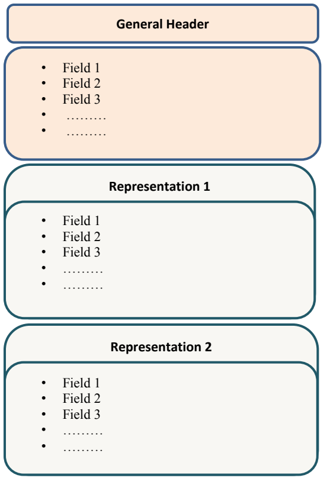
生体データ交換レコード（BDIR）の構造を示す図です。「General Header」の枠の下に「Field 1」「Field 2」「Field 3」と「………」2つを並べた枠があり、続いて「Representation 1」と「Representation 2」の枠に、それぞれ同じく「Field 1」「Field 2」「Field 3」と「………」2つが並んでいます。
Figure 2-1: Structure of JTC 1/SC 37 Biometric Data Interchange Records (BDIRs)
図 2-1: JTC 1/SC 37 生体データ交換レコード（BDIR）の構造
2.1.2 ANSI/NIST-ITL 1-2011 Transactions
2.1.2 ANSI/NIST-ITL 1-2011 のトランザクション
Figure 2-2 below depicts the ANSI/NIST-ITL 1-2011 Transaction structures, which are comprised of:
下の図 2-2 は、ANSI/NIST-ITL 1-2011 のトランザクション構造を示しています。この構造は次のもので構成されます。
•Transactions which contain Records
•レコードを含むトランザクション
•Records which contain Fields
•フィールドを含むレコード
•Fields which may contain Subfields, Information Items, or data
•サブフィールド、情報項目、またはデータを含むことがあるフィールド
•Subfields which may contain one or more Information Items or data
•一つ以上の情報項目またはデータを含むことがあるサブフィールド
•Information Items which contain data
•データを含む情報項目
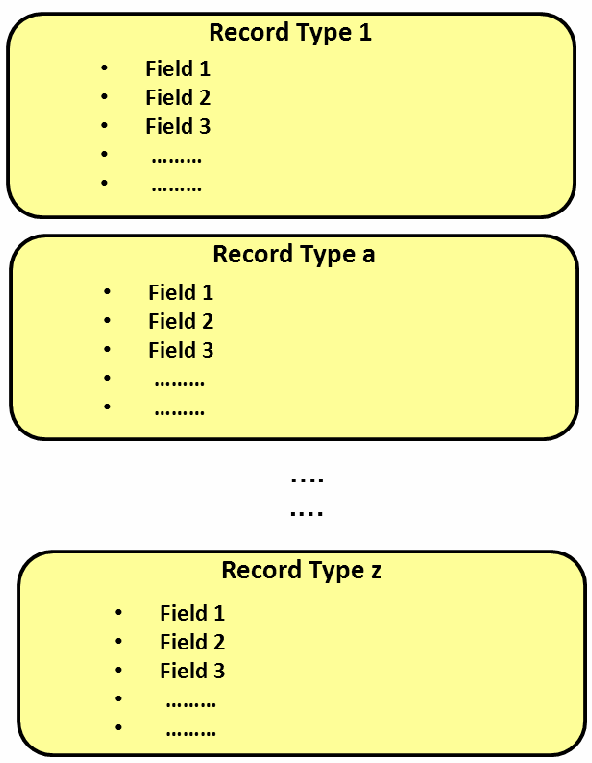
ANSI/NIST-ITL 1-2011のトランザクションの上位構造を示す図です。「Record Type 1」「Record Type a」「Record Type z」の3つの枠が縦に並び、その間に省略を表す点（「….」「….」）があります。各枠には「Field 1」「Field 2」「Field 3」と「………」2つが並んでいます。
Figure 2-2: High-level Structure of an ANSI/NIST-ITL 1-2011 Transaction
図 2-2: ANSI/NIST-ITL 1-2011 トランザクションの高レベル構造
Figure 2.16 in Sec. 2.4.4 depicts the generic AN-2011 Field Structure.
2.4.4 項の図 2.16 は、汎用的な AN-2011 のフィールド構造を示しています。
Record Type-1 is required and shall always be the first record within the transaction. In addition to Record Type-1, the standard requires that there shall be at least one other record type included in the transaction. There may be multiple records in a transaction of each record type other than Type-1. A record is comprised of fields. Each field is assigned a number, a description, and a mnemonic (e.g., Field 10.020: Subject pose / POS).
レコードタイプ 1 は必須であり、常にトランザクション内の最初のレコードでなければなりません。標準は、レコードタイプ 1 に加えて、トランザクションに少なくとも一つの他のレコードタイプが含まれなければならないと定めています。トランザクションには、タイプ 1 以外の各レコードタイプのレコードを複数含めることができます。レコードはフィールドで構成されます。各フィールドには、番号、説明、およびニーモニックが割り当てられます（例: Field 10.020: Subject pose / POS）。
2.2 NIST/ITL BioCTS 2012 Design
2.2 NIST/ITL BioCTS 2012 の設計
The software developed for both architectures (BioCTS 2012 for ISO/IEC and BioCTS 2012 for AN-2011) was developed in C# using the Microsoft® .NET 4.0 Framework. The programming paradigm chosen was Object-oriented programming (OOP) which uses objects (data structures consisting of data fields and methods together with their interactions) that are instances of classes (which contain definitions for creating instances of objects – referred to as class instances, class objects, instance objects or simply objects). A class defines constituent members which enable its instances (objects) to have state and behavior. Classes were used to define each component in the BioCTS architecture.
両方のアーキテクチャ（ISO/IEC 向け BioCTS 2012 と AN-2011 向け BioCTS 2012）のソフトウェアは、Microsoft® .NET 4.0 Framework を使用して C# で開発されました。採用したプログラミングパラダイムはオブジェクト指向プログラミング（OOP）です。OOP は、クラス（オブジェクトのインスタンスを作成するための定義を含むもので、クラスインスタンス、クラスオブジェクト、インスタンスオブジェクト、または単にオブジェクトと呼ばれます）のインスタンスであるオブジェクト（データフィールドとメソッド、およびそれらの相互作用からなるデータ構造）を使用します。クラスは、そのインスタンス（オブジェクト）が状態と振る舞いを持てるようにする構成メンバーを定義します。BioCTS アーキテクチャの各コンポーネントを定義するためにクラスを使用しました。
Despite differences in their structure, the major design philosophy for both Conformance Test Architectures and their Conformance Test Suite(s) is the use of encapsulation and polymorphism. Generally, encapsulation is a term used to describe how access to objects’ data is restricted, and polymorphism allows different data types and objects to be treated uniformly in code using interfaces. Encapsulation was used in NIST/ITL BioCTS 2012 to bundle data with its testing methods and to restrict access to other components of the same level as much as possible. Since the components do not know about other components at the same level, they do not rely on them to function properly.
構造に違いはあるものの、二つの適合性試験アーキテクチャとそのテストスイートに共通する主要な設計思想は、カプセル化とポリモーフィズムの利用です。一般に、カプセル化とは、オブジェクトのデータへのアクセスを制限する方法を説明する用語であり、ポリモーフィズムは、インターフェイスを用いて、異なるデータ型とオブジェクトをコード内で一様に扱えるようにします。NIST/ITL BioCTS 2012 では、データをそのテスト方法とまとめ、同じレベルの他のコンポーネントへのアクセスをできる限り制限するためにカプセル化を使用しました。コンポーネントは同じレベルの他のコンポーネントについて知らないため、正しく機能するためにそれらに依存しません。
•A Field contains
•フィールドが含むもの
•Name
•名前
•Data
•データ
•Tests to Perform
•実行するテスト
•Results of Tests
•テスト結果
•A Record or Header (AN-2011)/Representation (JTC 1/SC 37) contains
•レコードまたはヘッダー（AN-2011）/表現（JTC 1/SC 37）が含むもの
•Name
•名前
•Fields it contains
•それが含むフィールド
•Tests to Perform
•実行するテスト
•Results of Tests
•テスト結果
•A Transaction (AN-2011)/BDIR (JTC 1/SC 37) contains
•トランザクション（AN-2011）/BDIR（JTC 1/SC 37）が含むもの
•Name
•名前
•Records or Header/Representations it contains
•それが含むレコードまたはヘッダー/表現
•Tests to Perform
•実行するテスト
•Results of Tests
•テスト結果
Given two fields, F1 and F2 contained in the same record, F1 cannot access any of the contents of F2 and vice versa; however, the record that contains them can access the contents of both fields. The same can be said of two records contained within the same transaction. Neither record can access the contents of the other, but the transaction that contains the records can access the contents of both. This independence among components allows immediate testing of the code rather than waiting on dependent modules to be completed.
同じレコードに含まれる二つのフィールド F1 と F2 があるとき、F1 は F2 の内容にアクセスできず、その逆も同様です。ただし、それらを含むレコードは両方のフィールドの内容にアクセスできます。同じトランザクションに含まれる二つのレコードについても同じことが言えます。どちらのレコードも他方の内容にアクセスできませんが、それらのレコードを含むトランザクションは両方の内容にアクセスできます。コンポーネント間のこの独立性により、依存するモジュールの完成を待たずに、コードをすぐに試験できます。
Reference [3] “NIST Special Publication 500-295, Conformance Testing Methodology for ANSI/NIST-ITL 1-2011, Data Format for the Interchange of Fingerprint, Facial & Other Biometric Information” defines three levels of conformance testing: Level 1 (L1), Level 2 (L2) and Level 3 (L3). These three levels apply to both BioCTS 2012 for AN-2011 as well as BioCTS 2012 for ISO/IEC standards.
文献 [3]「NIST Special Publication 500-295, Conformance Testing Methodology for ANSI/NIST-ITL 1-2011, Data Format for the Interchange of Fingerprint, Facial & Other Biometric Information」は、適合性試験の三つのレベル、すなわちレベル 1（L1）、レベル 2（L2）、レベル 3（L3）を定義しています。これら三つのレベルは、AN-2011 向け BioCTS 2012 と ISO/IEC 標準向け BioCTS 2012 の両方に適用されます。
The current version of BioCTS does not perform Level 3 conformance tests but it is designed to incorporate this level of testing at a later time. Every test in BioCTS 2012 returns a “Result”, which contains a Test Level, Test Message, Test Name, and an “eResult”. Figure 2-3 depicts the “Result” class. Some enumerated types such as “eLevel” and “eResult” were created to standardize these values throughout BioCTS. Parse-level tests defined by the “eLevel” enumerated type shown in Fig. 2-4 are performed before all other levels of testing. In addition to “Pass”/”Fail”, the test results provide “eResult” values ranging from “Ok” to “Critical Error”.
現行版の BioCTS はレベル 3 の適合性試験を実施しませんが、後でこのレベルの試験を組み込めるように設計されています。BioCTS 2012 のすべての試験は、試験レベル、試験メッセージ、試験名、および「eResult」を含む「Result」を返します。図 2-3 は「Result」クラスを示しています。「eLevel」や「eResult」などの列挙型は、これらの値を BioCTS 全体で標準化するために作成されました。図 2-4 に示す「eLevel」列挙型で定義される構文解析レベルの試験は、他のすべてのレベルの試験より先に実施されます。試験結果は、「Pass」/「Fail」に加えて、「Ok」から「Critical Error」までの「eResult」値を提供します。
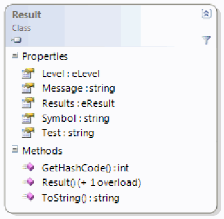
「Result」クラスのクラス図です。プロパティは Level : eLevel、Message : string、Results : eResult、Symbol : string、Test : string、メソッドは GetHashCode() : int、Result() (+ 1 overload)、ToString() : string です。
Figure 2 3: “Result” Class
図 2 3: 「Result」クラス
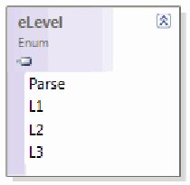
列挙型「eLevel」（Enum）の図です。値は Parse、L1、L2、L3 です。
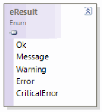
列挙型「eResult」（Enum）の図です。値は Ok、Message、Warning、Error、CriticalError です。
Figure 2 4: “eLevel” and “eResult”
図 2 4: 「eLevel」と「eResult」
2.3 BioCTS 2012 for ISO/IEC standards and CBEFF BIRs
2.3 ISO/IEC 標準および CBEFF BIR 向けの BioCTS 2012
2.3.1 Data Structures and Parsing of Binary Files Specified by JTC 1/SC 37
2.3.1 JTC 1/SC 37 が規定するバイナリファイルのデータ構造と構文解析
The ISO/IEC 19794-x series of “1G” standards specifies binary encoding only. The Second Generation of these standards specifies both a binary format and an XML format in standards amendments.
ISO/IEC 19794-x シリーズの「1G」標準は、バイナリエンコーディングのみを規定しています。これらの標準の第2世代は、バイナリフォーマットと XML フォーマットの両方を、標準の修正版で規定しています。
Unlike parsing binary files, parsing XML is well-defined and streamlined. Without set markers, or tags, parsing of binary format files relies on field length as defined in the standards. Thus, optional and variable-length fields present challenges during parsing.
バイナリファイルの構文解析と異なり、XML の構文解析は明確に定義されており、効率化されています。定まったマーカーやタグがないため、バイナリフォーマットのファイルの構文解析は、標準で定義されたフィールド長に依存します。そのため、任意フィールドと可変長フィールドは構文解析時に課題を生じます。
For example, the “FormatIdentifier Field” Class is derived from the base Field class, but assigns values to the following:
たとえば、「FormatIdentifier Field」クラスは基底の Field クラスから派生していますが、次のものに値を割り当てます。
•Its name is “Format Identifier”
•名前は「Format Identifier」
•It is Field Number 1
•フィールド番号は 1
•It has a Minimum Length of 4 bytes
•最小長は 4 バイト
•It has a Maximum Length of 4 bytes
•最大長は 4 バイト
•What Data (bytes) were parsed to it
•構文解析によってそれに渡されたデータ（バイト）
•A list of Results
•結果のリスト
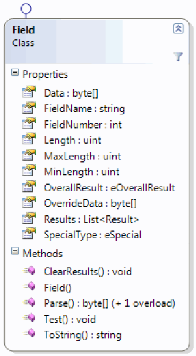
「Field」クラスのクラス図です（インターフェースの記号付き）。プロパティは Data : byte[]、FieldName : string、FieldNumber : int、Length : uint、MaxLength : uint、MinLength : uint、OverallResult : eOverallResult、OverrideData : byte[]、Results : List<Result>、SpecialType : eSpecial、メソッドは ClearResults() : void、Field()、Parse() : byte[] (+ 1 overload)、Test() : void、ToString() : string です。
Figure 2 5: “Field” Class
図 2 5: 「Field」クラス
However, FormatIdentifier Field does not have access to any of the other derived Fields. As was discussed in Sec. 2.1.1, Fields are the simplest building blocks of the ISO/IEC data interchange formats, which are then grouped together into sections to define General Headers or Representations. BioCTS 2012 for ISO/IEC has been designed to mimic the structure of the ISO/IEC standards when possible. For example, it has a Data Structure for the General Headers and Representations. Figure 2-6 depicts the Header class. A Header class has the ability to run tests as well; however, Level-2 tests that involve only the fields within a Header are rare.
ただし、FormatIdentifier Field は、派生した他のどのフィールドにもアクセスできません。2.1.1 項で論じたとおり、フィールドは ISO/IEC データ交換フォーマットの最も単純な構成要素であり、それらがまとめられてセクションとなり、一般ヘッダーや表現を定義します。ISO/IEC 向け BioCTS 2012 は、可能な限り ISO/IEC 標準の構造を模倣するよう設計されています。たとえば、一般ヘッダーと表現のためのデータ構造を持っています。図 2-6 は Header クラスを示しています。Header クラスも試験を実行できますが、Header 内のフィールドだけが関わるレベル 2 の試験はまれです。
The ISO/IEC biometric data interchange formats standards specify that the Biometric Information Data Record can contain multiple Views/Representations. A Representation has specific information about the biometric sample that was captured. It is made up of multiple Fields, collected in a List.
ISO/IEC 生体データ交換フォーマット標準は、生体情報データレコードが複数のビュー/表現を含むことができると規定しています。表現は、取得された生体サンプルに関する具体的な情報を持ちます。表現は、リストにまとめられた複数のフィールドで構成されます。
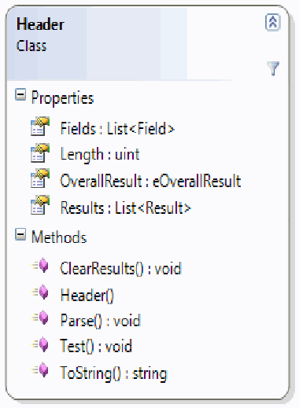
「Header」クラスのクラス図です。プロパティは Fields : List<Field>、Length : uint、OverallResult : eOverallResult、Results : List<Result>、メソッドは ClearResults() : void、Header()、Parse() : void、Test() : void、ToString() : string です。
Figure 2 6: “Header” Class
図 2 6: 「Header」クラス
BioCTS 2012 for ISO/IEC defines each Field as an individual class derived from the base Field class shown in Fig. 2-5. Each field inherits from this base class, and is self-contained.
ISO/IEC 向け BioCTS 2012 は、各フィールドを、図 2-5 に示す基底の Field クラスから派生した個別のクラスとして定義しています。各フィールドはこの基底クラスを継承し、自己完結しています。
The Representation class shown in Fig. 2-7, has the ability to perform Level-2 tests from its Test method and can perform any Level-2 test that requires only Fields from that Representation (e.g., comparing the Image’s internal width/height vs. the representation’s specified width/height).
図 2-7 に示す Representation クラスは、その Test メソッドからレベル 2 の試験を実行でき、その Representation のフィールドだけを必要とする任意のレベル 2 の試験（例: 画像内部の幅/高さと、表現で指定された幅/高さとの比較）を実行できます。
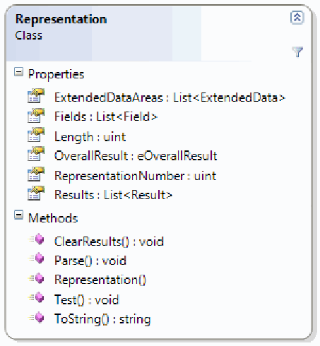
「Representation」クラスのクラス図です。プロパティは ExtendedDataAreas : List<ExtendedData>、Fields : List<Field>、Length : uint、OverallResult : eOverallResult、RepresentationNumber : uint、Results : List<Result>、メソッドは ClearResults() : void、Parse() : void、Representation()、Test() : void、ToString() : string です。
Figure 2 7: “Representation” Class
図 2 7: 「Representation」クラス
Some of the ISO/IEC standards specify that a Representation has Extended Data to accommodate annotations or vendor specific information. BioCTS 2012 has an optional area to parse Fields within an Extended Data area. Extended Data areas are very similar to Representations and Headers, in that they have a collection of Fields and a Test() method.
ISO/IEC 標準の一部は、注釈やベンダー固有の情報を収容するために、表現が拡張データを持つと規定しています。BioCTS 2012 には、拡張データ領域内のフィールドを構文解析する任意の領域があります。拡張データ領域は、フィールドの集合と Test() メソッドを持つという点で、表現やヘッダーとよく似ています。
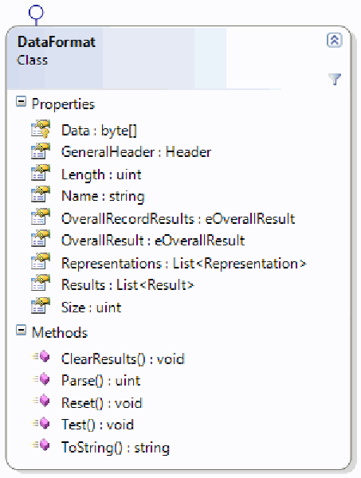
「DataFormat」クラスのクラス図です（インターフェースの記号付き）。プロパティは Data : byte[]、GeneralHeader : Header、Length : uint、Name : string、OverallRecordResults : eOverallResult、OverallResult : eOverallResult、Representations : List<Representation>、Results : List<Result>、Size : uint、メソッドは ClearResults() : void、Parse() : uint、Reset() : void、Test() : void、ToString() : string です。
Figure 2 8: “Data Format” Class
図 2 8: 「Data Format」クラス
The DataFormat class, depicted in Fig. 2-8, is the main class for a Conformance Test Suite (CTS). The ISO/IEC data interchange format standards specify that there is one Header and multiple Representations, and this is reflected in the DataFormat class. There is a single Header (GeneralHeader), and a List<Representation> (list of Representations). Since the DataFormat class shown in Fig. 2-8 is the main class for a CTS, its Parse method is the first method called when testing an implementation, as shown in the pseudo code below.
図 2-8 に示す DataFormat クラスは、適合性試験テストスイート（CTS）の主要クラスです。ISO/IEC データ交換フォーマット標準は、一つのヘッダーと複数の表現があると規定しており、これは DataFormat クラスに反映されています。単一のヘッダー（GeneralHeader）と、List<Representation>（表現のリスト）があります。図 2-8 に示す DataFormat クラスは CTS の主要クラスであるため、下の擬似コードに示すとおり、その Parse メソッドが、実装の試験時に最初に呼び出されるメソッドとなります。
When a DataFormat Parse() method is called, it parses the entire file incrementally. Pseudo code for “DataFormat Parse”, “Header Parse” and “Representation” Methods are shown below.
DataFormat の Parse() メソッドが呼び出されると、ファイル全体を順次構文解析します。「DataFormat Parse」、「Header Parse」、「Representation」の各メソッドの擬似コードを下に示します。
File Passed to a CTS
Byte[] dataFromFile = ReadFile(FilePath);
CTS dataFormat = new CTS(dataFromFile);
dataFormat.Parse();DataFormat Parse()
// First Parse the Header
GeneralHeader.Parse()
// Then Parse each Representation in Turn
for(int i = 0; i < NumberOfRepresentationsExpected; i++)
{
Representations.Add(new Representation(data));
}Header Parse Method
// The Following are Fields
Fields.Add(FormatIdentifier(data));
Fields.Add(VersionNumber(data));
…Representation Parse Method
// The Following are Fields
Fields.Add(RepresentationLength(data));
Fields.Add(CaptureDateTime(data));
…The challenge of parsing binary files can be minimized through careful software design, but not completely mitigated. For example, given a field length of 4 bytes and the hexadecimal value 0x46 49 52 00 30 33 30 00 00 00 97 00, the first three fields would appear as:
バイナリファイルの構文解析の課題は、慎重なソフトウェア設計によって最小化できますが、完全には軽減できません。たとえば、フィールド長が 4 バイトで、16 進数の値が 0x46 49 52 00 30 33 30 00 00 00 97 00 である場合、最初の三つのフィールドは次のようになります。
•0x46 49 52 00 (Format Identifier)
•0x46 49 52 00（Format Identifier）
•0x30 33 30 00 (Version Number)
•0x30 33 30 00（Version Number）
•0x00 00 97 00 (Record Length - incorrect: should be 0x00 00 00 97)
•0x00 00 97 00（Record Length - 誤り: 0x00 00 00 97 であるべき）
In this case there is a missing byte before the value “97”. This error is not discovered during parsing, but rather during testing – when the Record Length specified does not match the Number of Bytes Read (a Level 2 test).
この場合、値「97」の前に 1 バイトが欠けています。この誤りは、構文解析中には見つからず、試験中、すなわち、指定された Record Length が読み取られたバイト数と一致しないとき（レベル 2 の試験）に見つかります。
Each of the class types defined thus far contain a Test() method. BioCTS takes a top down approach to testing, similar to that of its parsing. Starting with the DataFormat class, each class’s Test() method calls the test methods of its containing elements as shown below:
ここまでに定義したクラスの型は、いずれも Test() メソッドを持っています。BioCTS は、構文解析と同様に、試験にもトップダウンのアプローチを採っています。DataFormat クラスから始めて、各クラスの Test() メソッドは、下に示すとおり、それに含まれる要素の試験メソッドを呼び出します。
DataFormat Test Method
GeneralHeader.Test();
Foreach(Representation in Representations)
{
Representation.Test();
}
// Any Additional Record-Wide Level 2 tests are called hereGeneral Header Test Method
Foreach(Field in Fields)
{
Field.Test();
}
// Any additional Header-Wide Level 2 tests are called hereRepresentation Test Method
Foreach(Field in Fields)
{
Field.Test();
}
// Any additional Representation-Wide Level 2 tests are called hereField Test Method
// Level 1 Tests Here
ValueTest();
LengthTest();2.3.2 Biometric Information Records
2.3.2 生体情報レコード
Figure 2-9 depicts the CBEFF structure and its three elements: (a) a Standard Biometric Header (SBH); (b) the Biometric Data Block (BDB) which contains the biometric data (independently of the biometric modality); and (c) an optional Security Block (SB). This CBEFF structure is called a Biometric Information Record or BIR.
図 2-9 は、CBEFF の構造とその三つの要素を示しています。(a) 標準生体ヘッダー（SBH）、(b) （生体モダリティによらず）生体データを含む生体データブロック（BDB）、(c) 任意のセキュリティブロック（SB）です。この CBEFF の構造は、生体情報レコード（BIR）と呼ばれます。
横に並んだ3つの箱の図です。左から「Header (SBH)」（ヘッダー）、「Biometric Data Block (BDB)」（生体データブロック）、「Security Block (SB)」（セキュリティブロック）です。
Figure 2 9: CBEFF Structure and Elements
図 2 9: CBEFF の構造と要素
“BIR” is a superstructure within BioCTS 2012 that contains the following classes, shown in Fig. 2-10:
「BIR」は BioCTS 2012 内の上位構造であり、図 2-10 に示す次のクラスを含みます。
•BIR class
•BIR クラス
•Patron Format class
•Patron Format クラス
•Data Format
•Data Format
•Security Format class
•Security Format クラス
![Class diagrams of four overlapping classes. "BIR" class: properties BDB : DataFormat, FilePath : string, OverallResult : eOverall… (cut off), SB : SecurityFormat, SBH : PatronFormat, Size : uint; methods BIR() (+ 1 overload), ClearResults() : void, Parse() : void, Test() : void, ToString() : string. "PatronFormat" class: properties Fields : List<Field>, Name : string, OverallResult : eOverallResult, Results : List<Result>, Size : uint; methods ClearResults() : void, Parse() : uint, Reset() : void, Test() : void, ToString() : string. "DataFormat" class: properties Data : byte[], GeneralHeader : Header, Length : uint, Name : string, OverallRecordResults : eOver… (cut off), OverallResult : eOverallResult, Representations : List<Repres… (cut off), Results : List<Result>, Size : uint; methods ClearResults() : void, Parse() : uint, Reset() : void, Test() : void, ToString() : string. "SecurityFormat" class: properties Fields : List<Field>, Name : string, OverallResult : eOverallResult, Results : List<Result>, Size : uint; methods ClearResults() : void, Parse() : uint, Reset() : void, Test() : void, ToString() : string.](assets/ir-7877/p0023-figure-01.png)
重なり合って並ぶ4つのクラス図です。「BIR」クラスのプロパティは BDB : DataFormat、FilePath : string、OverallResult : eOverall…（途中で隠れています）、SB : SecurityFormat、SBH : PatronFormat、Size : uint、メソッドは BIR() (+ 1 overload)、ClearResults() : void、Parse() : void、Test() : void、ToString() : string です。「PatronFormat」クラスのプロパティは Fields : List<Field>、Name : string、OverallResult : eOverallResult、Results : List<Result>、Size : uint、メソッドは ClearResults() : void、Parse() : uint、Reset() : void、Test() : void、ToString() : string です。「DataFormat」クラスのプロパティは Data : byte[]、GeneralHeader : Header、Length : uint、Name : string、OverallRecordResults : eOver…（隠れています）、OverallResult : eOverallResult、Representations : List<Repres…（隠れています）、Results : List<Result>、Size : uint、メソッドは ClearResults() : void、Parse() : uint、Reset() : void、Test() : void、ToString() : string です。「SecurityFormat」クラスのプロパティとメソッドは PatronFormat と同じ構成です。
Figure 2 10: “BIR, PatronFormat”, “DataFormat”, and “SecurityFormat” Classes
図 2 10: 「BIR, PatronFormat」、「DataFormat」、「SecurityFormat」クラス
BioCTS 2012 for ISO/IEC uses a modular architecture represented in Fig. 2-11 allowing the user to select each portion of the architecture. The software will automatically parse and test what is specified.
ISO/IEC 向け BioCTS 2012 は、図 2-11 に示すモジュール式アーキテクチャを使用しており、利用者はアーキテクチャの各部分を選択できます。ソフトウェアは、指定されたものを自動的に構文解析して試験します。
![High-level architecture of BioCTS 2012 for ISO/IEC. An "Implementation" arrow points down into a large rounded box labelled "GUI". Inside, a "Controller" box sends output (green arrows) to "Test Report" and "XML Report", and exchanges data (purple down and up arrows) with a dashed red region labelled "BIR Processing". The BIR Processing region shows a stepwise flow: "Pre-Parse" (• Ensure File Exists • Get Bytes From File) → "Pass Bytes to BIR component" (• Parse SBH if one is Selected • Parse BDB if one is Selected • Parse SB if one is Selected) → "Test BIR Component" (• Test SBH if one is Selected • Test BDB if one is Selected • Test SB if one is Selected) → "Generate Output".](assets/ir-7877/p0024-figure-05.png)
ISO/IEC向けBioCTS 2012の上位アーキテクチャを示す図です。「Implementation」の矢印が「GUI」と書かれた大きな角丸の枠の中へ入ります。枠の中では「Controller」が「Test Report」と「XML Report」へ出力し（緑の矢印）、「BIR Processing」と書かれた赤い破線の領域とデータをやり取りします（紫の上下の矢印）。BIR Processing の中は段階的な流れで、「Pre-Parse」（• Ensure File Exists • Get Bytes From File）→「Pass Bytes to BIR component」（• Parse SBH if one is Selected • Parse BDB if one is Selected • Parse SB if one is Selected）→「Test BIR Component」（• Test SBH if one is Selected • Test BDB if one is Selected • Test SB if one is Selected）→「Generate Output」です。
Figure 2-11: BioCTS 2012 for ISO/IEC High-Level Architecture
図 2-11: ISO/IEC 向け BioCTS 2012 の高レベルアーキテクチャ
2.4 BioCTS 2012 for AN-2011 - Testing of AN-2011 High-Level Architecture
2.4 AN-2011 向けの BioCTS 2012 - AN-2011 の高レベルアーキテクチャの試験
2.4.1 Data Structures and Class Diagrams of BioCTS 2012 for AN-2011
2.4.1 AN-2011 向けの BioCTS 2012 のデータ構造とクラス図
ANSI/NIST-ITL 1-2011 Transactions are more complex than the ISO/IEC data interchange formats because they include Records for a number of modalities, field structures made up of various combinations of subfields and information items, and a combination of binary and tagged Records. BioCTS 2012 for AN-2011 treats the Information Item as the smallest portion of Data of an AN-2011 transaction. An Information Item may access only its own content and not that of any other structure. An Information Item has the ability to test itself, using its Test() method. “Field”, “Subfield”, “InformationItem”, and “BinarySubfiled” classes used in BioCTS for AN-2011 are depicted in Fig. 2-12 and 2-13. Tests are generally performed on data contained in Information Items. A Subfield contains one or more Information Items, but does not contain data. Therefore, Subfields do not have the ability to perform tests. A Field is a collection of Subfields, and therefore, the Field class is able to test the Subfields held within it.
ANSI/NIST-ITL 1-2011 のトランザクションは、多数のモダリティのレコード、サブフィールドと情報項目のさまざまな組合せで構成されるフィールド構造、およびバイナリレコードとタグ付きレコードの組合せを含むため、ISO/IEC データ交換フォーマットより複雑です。AN-2011 向け BioCTS 2012 は、情報項目を AN-2011 トランザクションのデータの最小単位として扱います。情報項目は、自身の内容だけにアクセスでき、他の構造の内容にはアクセスできません。情報項目は、Test() メソッドを使って自分自身を試験できます。AN-2011 向け BioCTS で使用される「Field」、「Subfield」、「InformationItem」、「BinarySubfiled」クラスを図 2-12 と 2-13 に示します。試験は一般に、情報項目に含まれるデータに対して実施されます。サブフィールドは一つ以上の情報項目を含みますが、データは含みません。そのため、サブフィールドには試験を実行する機能がありません。フィールドはサブフィールドの集合であり、したがって Field クラスは、それが保持するサブフィールドを試験できます。
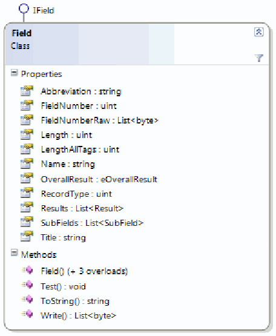
インターフェース「IField」を実装する「Field」クラスのクラス図です。プロパティは Abbreviation : string、FieldNumber : uint、FieldNumberRaw : List<byte>、Length : uint、LengthAllTags : uint、Name : string、OverallResult : eOverallResult、RecordType : uint、Results : List<Result>、SubFields : List<SubField>、Title : string、メソッドは Field() (+ 3 overloads)、Test() : void、ToString() : string、Write() : List<byte> です。
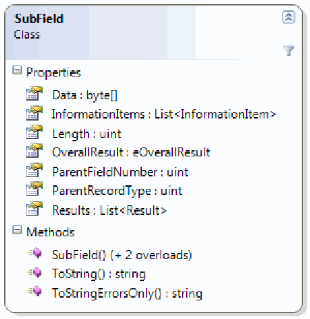
「SubField」クラスのクラス図です。プロパティは Data : byte[]、InformationItems : List<InformationItem>、Length : uint、OverallResult : eOverallResult、ParentFieldNumber : uint、ParentRecordType : uint、Results : List<Result>、メソッドは SubField() (+ 2 overloads)、ToString() : string、ToStringErrorsOnly() : string です。
Figure 2 12: “Field” and “Subfield” Classes
図 2 12: 「Field」クラスと「Subfield」クラス
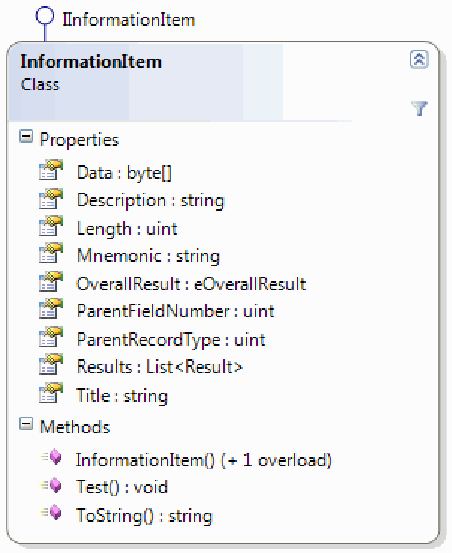
インターフェース「IInformationItem」を実装する「InformationItem」クラスのクラス図です。プロパティは Data : byte[]、Description : string、Length : uint、Mnemonic : string、OverallResult : eOverallResult、ParentFieldNumber : uint、ParentRecordType : uint、Results : List<Result>、Title : string、メソッドは InformationItem() (+ 1 overload)、Test() : void、ToString() : string です。
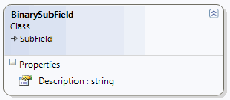
SubField から派生する「BinarySubField」クラスのクラス図です。プロパティは Description : string の1つです。
Figure 2 13: “InformastionItem” and “BinarySubField” Classes
図 2 13: 「InformastionItem」クラスと「BinarySubField」クラス
A Record is made up of Fields, and every Record inherits from a base Record class. As shown in Fig. 2-14 Binary Records, such as Types 4, 7 and 8 inherit from a Subclass of Record – the BinaryRecord class.
レコードはフィールドで構成され、すべてのレコードは基底の Record クラスを継承します。図 2-14 に示すとおり、タイプ 4、7、8 などのバイナリレコードは、Record のサブクラスである BinaryRecord クラスを継承します。
![Class diagram of the "Record" class and its inheritance. The central "Record" class (implementing the interface "IRecord") has the properties Data : byte[], Description : string, Fields : List<Field>, IDC : uint, Length : uint, OverallResult : eOverallResult, RecordType : int, Results : List<Result>, Title : string, and the methods Parse() : void, Record() (+ 2 overloads), Test() : void, ToString() : string, Write() : List<byte>. The classes Type01, Type02, Type09, Type10, Type11, Type12, Type13, Type14, Type15, Type16, Type17, Type18, Type19, Type20, Type21, Type98, Type99 and Unsupported inherit from Record. The "BinaryRecord" class also inherits from Record, and the classes Type04, Type07 and Type08 inherit from BinaryRecord.](assets/ir-7877/p0026-figure-01.png)
「Record」クラスとその継承関係を示すクラス図です。中央の「Record」クラス（インターフェース「IRecord」を実装）のプロパティは Data : byte[]、Description : string、Fields : List<Field>、IDC : uint、Length : uint、OverallResult : eOverallResult、RecordType : int、Results : List<Result>、Title : string、メソッドは Parse() : void、Record() (+ 2 overloads)、Test() : void、ToString() : string、Write() : List<byte> です。Type01、Type02、Type09、Type10、Type11、Type12、Type13、Type14、Type15、Type16、Type17、Type18、Type19、Type20、Type21、Type98、Type99、Unsupported の各クラスが Record を継承します。「BinaryRecord」クラスも Record を継承し、Type04、Type07、Type08 は BinaryRecord を継承します。
Figure 2-14: “Record” Class and Inheritance
図 2-14: 「Record」クラスと継承
2.4.2 Parsing
2.4.2 構文解析
2.4.2.1 Pre-Parse
2.4.2.1 事前構文解析
Two major operations occur during Pre-Parsing: (a) determining if the File Path passed into the software exists (e.g. a valid file), and (b) creating a Table of Contents (TOC) for the Transaction (by parsing of fields 1.001 to 1.003).
事前構文解析の間に、主要な操作が二つ行われます。(a) ソフトウェアに渡されたファイルパスが存在するか（たとえば有効なファイルか）の判定と、(b) （フィールド 1.001 から 1.003 の構文解析による）トランザクションの目次（TOC）の作成です。
Field 1.001 is the length of the Type-1 Record and Field 1.003 describes the other record types within the transaction. After getting these two bits of information, the Pre-Parser skips to each record’s first field to record their length. The end result is a TOC where each entry has a Record Type Number, IDC Value, and Record Length (in bytes).
フィールド 1.001 はタイプ 1 レコードの長さであり、フィールド 1.003 はトランザクション内の他のレコードタイプを記述します。この二つの情報を得た後、事前構文解析器は各レコードの最初のフィールドへ進み、それらの長さを記録します。その結果が TOC であり、各エントリは Record Type Number、IDC Value、Record Length（バイト単位）を持ちます。
After these two operations are completed, a test to ensure that the summation of Table of Contents’ length values is equal to the total number of bytes in the file is performed. The pseudo-code below describes the Pre-Parse program flow.
これら二つの操作が完了した後、目次の長さの値の合計がファイルの総バイト数に等しいことを確認する試験が実施されます。事前構文解析のプログラムフローを、下の擬似コードに示します。
Pre-Parse Program Flow
Parse Field 1.001
Parse Field 1.002
Parse Filed 1.003
Use Field 1.003 to create a TableOfContents containing TableItems(Record Type Number, IDC Value)
Update Table Value for the First Record with the value from Field 1.001
Skip to the next Record Length field to update the TableItems with each Record’s Length
Perform Test: Summation of Table Lengths == Total Number of Bytes in File2.4.2.2 Parse Fields and Records
2.4.2.2 フィールドとレコードの構文解析
After Pre-Parsing is complete, the types and lengths of all Records in the Transaction are known. The Transaction data is split according to each Record’s specified length, creating a list of records (List<Record>). Each Record is passed a portion of the Transaction’s bytes, which it uses to create a list of fields (List<Field>). Each Field has a list of Subfields (List<Subfield>), and each Subfield has a list of Information Items (List<InformationItem>). The following pseudo-code describes this program flow.
事前構文解析が完了すると、トランザクション内のすべてのレコードの種類と長さがわかります。トランザクションのデータは、各レコードの指定された長さに従って分割され、レコードのリスト（List<Record>）が作成されます。各 Record には、トランザクションのバイト列の一部が渡され、Record はそれを使ってフィールドのリスト（List<Field>）を作成します。各 Field はサブフィールドのリスト（List<Subfield>）を持ち、各サブフィールドは情報項目のリスト（List<InformationItem>）を持ちます。このプログラムフローを、下の擬似コードに示します。
Note: Every field is parsed as having subfields with information items, even fields that ANSI/NIST-ITL 1-2011 specifies as having no subfields and fields that ANSI/NIST-ITL 1-2011 specifies as having subfields which contain no information items. This intentional change was made for parsing consistency and because of the observation that there is no difference in encoding between a field with one subfield or information item and a field containing simply data.
注: すべてのフィールドは、情報項目を含むサブフィールドを持つものとして構文解析されます。これは、ANSI/NIST-ITL 1-2011 がサブフィールドを持たないと規定しているフィールドや、情報項目を含まないサブフィールドを持つと規定しているフィールドも同様です。この意図的な変更は、構文解析の一貫性のために行われたもので、また、サブフィールドや情報項目が一つのフィールドと、単にデータだけを含むフィールドとで、エンコーディング上の違いがないことが確認されたためです。
Parse Fields and Records Program Flow
Foreach(TableItem in TableOfContents)
{
Create a new Record of TableItem.Record Type Number
Pass the new Record a portion of the File’s Data based on
TableItem.Length
Call Record.Parse() to refine the Record data into Fields
Add this Record to the Transaction.List<Record>
}2.4.3 Testing
2.4.3 試験
Testing can begin only after parsing is successfully completed. Testing is performed in isolation when possible following this approach:
試験は、構文解析が正常に完了した後にのみ開始できます。試験は、可能な場合、次のアプローチに従って分離して実施されます。
•Transaction-Level Testing: Needs information from more than one Record
•トランザクションレベルの試験: 複数の Record からの情報が必要
•Record-Level Testing: Needs information from more than one Field within the same Record
•レコードレベルの試験: 同じ Record 内の複数の Field からの情報が必要
•Field-Level Testing: Needs no more information than what is stored within a single Field
•フィールドレベルの試験: 単一の Field 内に保存された情報以上は必要としない
2.4.3.1 Transaction-Level Testing - (AN2K11.Test())
2.4.3.1 トランザクションレベルの試験 - (AN2K11.Test())
This method performs two operations:
このメソッドは二つの操作を実行します。
•Loop over the Transaction’s list of Records calling Record.Test() on each in turn.
•トランザクションのレコードのリストを順に処理し、それぞれに対して Record.Test() を呼び出します。
•Transaction-based Level-2 testing requires information from more than one Record.
•トランザクションに基づくレベル 2 の試験には、複数の Record からの情報が必要。
Transaction.Test Program Flow
Foreach(Record in Transaction.List<Record>)
{
Call Record.Test()
}
Perform Transaction Based Level 2 Tests2.4.3.2 Record-Level Testing - (Record.Test())
2.4.3.2 レコードレベルの試験 - (Record.Test())
This method performs two operations:
このメソッドは二つの操作を実行します。
•Loop over the Record’s list of Fields calling Field.Test() on each in turn.
•レコードのフィールドのリストを順に処理し、それぞれに対して Field.Test() を呼び出します。
•Record-based Level-2 testing requires information from more than one Field within the Record.
•レコードに基づくレベル 2 の試験には、その Record 内の複数の Field からの情報が必要。
Record.Test Program Flow
Foreach(Field in Record.List<Field>)
{
Call Field.Test()
}
Perform Record Based Level 2 Tests2.4.3.3 Field-Level Testing - (Field.Test())
2.4.3.3 フィールドレベルの試験 - (Field.Test())
This method performs Level-1 testing on the Field’s Subfields and Information Items, ensuring correct count number, lengths, and value tests, etc. where applicable.
このメソッドは、フィールドのサブフィールドと情報項目に対してレベル 1 の試験を実施し、該当する場合は、正しい個数、長さ、値の試験などを確認します。
Field.Test Program Flow
Perform Subfield and Information Count Tests
Perform Character Encoding Tests
Perform Value Tests
Perform Any other Level 1 test necessaryThe BioCTS 2012 for AN-2011 High-Level Architecture depicting Pre-Parsing, Parsing, and Testing operations is shown in Fig. 2-15. The operations described above from Pre-parsing to Field-level testing are depicted. The test results are provided in two formats: text format and XML to facilitate automated analysis of test results when a large number of transactions are tested.
事前構文解析、構文解析、試験の各操作を示す AN-2011 向け BioCTS 2012 の高レベルアーキテクチャを図 2-15 に示します。事前構文解析からフィールドレベルの試験まで、上で述べた操作が示されています。試験結果は、多数のトランザクションを試験する場合に試験結果の自動分析を容易にするため、テキスト形式と XML の二つの形式で提供されます。
![High-level architecture of BioCTS 2012 for AN-2011. A "Transaction(s)" arrow points down into a large rounded box labelled "GUI". Inside, a "Controller" box sends output (green arrows) to "Test Report" and "XML Report", and exchanges data (purple down and up arrows) with a dashed red region labelled "Conformance Test Suite". That region shows a stepwise flow: "Pre-Parse" (• Ensure File Exists • Parse 1.003 to obtain file structure, stores in a Table) → "Parse Fields and Records" (• Uses Tag or information from the Table (above) to parse Fields) → "Transaction-Level Testing" (• Loops over every Record, calling Record.Test() • Performs Transaction-Wide Level 2 Tests after Record Level Testing Completes) → "Record-Level Testing" (• Loops over every Field in the Record, calling Field.Test() • Performs Record-Wide Level 2 Tests after Field Testing) → "Field-Level Testing" (• Performs Level 1 Tests on Fields, Subfields and Information Items).](assets/ir-7877/p0029-figure-07.png)
AN-2011向けBioCTS 2012の上位アーキテクチャを示す図です。「Transaction(s)」の矢印が「GUI」と書かれた大きな角丸の枠の中へ入ります。枠の中では「Controller」が「Test Report」と「XML Report」へ出力し（緑の矢印）、「Conformance Test Suite」と書かれた赤い破線の領域とデータをやり取りします（紫の上下の矢印）。その領域の中は段階的な流れで、「Pre-Parse」（• ファイルの存在を確認する • 1.003 を解析してファイル構造を取得し、テーブルに格納する）→「Parse Fields and Records」（• タグまたは上のテーブルの情報を使用してフィールドを解析する）→「Transaction-Level Testing」（• すべてのレコードを順に処理し、Record.Test() を呼び出す • レコードレベルの試験の完了後、トランザクション全体にわたるレベル 2 の試験を実施する）→「Record-Level Testing」（• レコード内のすべてのフィールドを順に処理し、Field.Test() を呼び出す • フィールド試験の後、レコード全体にわたるレベル 2 の試験を実施する）→「Field-Level Testing」（• フィールド、サブフィールド、情報項目に対してレベル 1 の試験を実施する）です。
Figure 2 15: BioCTS 2012 for AN-2011 High-Level Architecture
図 2 15: AN-2011 向け BioCTS 2012 の高レベルアーキテクチャ
2.4.4 Clarifying AN-2011 Field Structure Definitions
2.4.4 AN-2011 のフィールド構造定義の明確化
The following Field structures are contained in ANSI/NIST ITL 1-2011, but a formal definition (including the underlying subfield and information item organization) is not provided:
次のフィールド構造は ANSI/NIST ITL 1-2011 に含まれていますが、（基になるサブフィールドと情報項目の構成を含む）正式な定義は示されていません。
•Single Info Item
•単一の情報項目
•Shown in tables as a Field containing data
•表ではデータを含むフィールドとして示される
•Multiple Info Items
•複数の情報項目
•Shown in tables as a Field containing multiple Info Items
•表では複数の情報項目を含むフィールドとして示される
•Subfields: Repeating Sets of Info Items
•サブフィールド: 情報項目の繰り返しセット
•Shown in tables as a Field containing one or more Subfields which each contain multiple information items
•表では、それぞれが複数の情報項目を含む一つ以上のサブフィールドを含むフィールドとして示される
•Subfields Repeating Values
•サブフィールド: 値の繰り返し
•“Shown in tables as a Field containing Subfields which contain data”
•「表ではデータを含むサブフィールドを含むフィールドとして示される」
The difficulty in parsing and defining the Subfield and Information Items structures comes from the following observation:
サブフィールドと情報項目の構造の構文解析と定義が難しいのは、次の観察に由来します。
It is impossible to differentiate between a single subfield, a single information item, and a single piece of data in the Traditional Encoding defined in Annex B of AN-2011.
AN-2011 の附属書 B で定義された従来型エンコーディングでは、単一のサブフィールド、単一の情報項目、単一のデータを区別することは不可能です。
Information Items are defined as the information separated by the ASCII Unit Separator character (US). The number of Information Items present (\(N_{ii}\)) equals the number of US separators present (\(N_{us}\)) plus one: \(N_{ii} = N_{us} + 1\). Therefore, when there is a single Information Item present, there are no Unit Separators present (\(N_{us} = 0\)). Similarly, the number of Subfields present (\(N_{sf}\)) equals the number of ASCII Record Separator characters (RS) present (\(N_{rs}\)) plus one: \(N_{sf} = N_{rs} + 1\). Therefore, when there is a single Subfield present, there are no Record Separators present (\(N_{rs} = 0\)). Because there are no separators present in these cases, there is no difference between single instances of Subfields, Information Items, and data. The GS character is used to identify the end of a field except when that field is the last field in the record; in this case the FS character is used.
情報項目は、ASCII のユニット区切り文字（US）で区切られた情報として定義されます。存在する情報項目の数（\(N_{ii}\)）は、存在する US 区切り文字の数（\(N_{us}\)）に 1 を加えたものに等しくなります（\(N_{ii} = N_{us} + 1\)）。したがって、情報項目が一つだけ存在する場合、ユニット区切り文字は存在しません（\(N_{us} = 0\)）。同様に、存在するサブフィールドの数（\(N_{sf}\)）は、存在する ASCII のレコード区切り文字（RS）の数（\(N_{rs}\)）に 1 を加えたものに等しくなります（\(N_{sf} = N_{rs} + 1\)）。したがって、サブフィールドが一つだけ存在する場合、レコード区切り文字は存在しません（\(N_{rs} = 0\)）。これらの場合には区切り文字が存在しないため、サブフィールド、情報項目、データのそれぞれ単一のインスタンスの間に違いはありません。GS 文字は、フィールドの終端を識別するために使用されます。ただし、そのフィールドがレコードの最後のフィールドである場合は、FS 文字が使用されます。
To simplify parsing, and to be able to treat every field the same, BioCTS 2012 AN-2011 defines every field as having a list of subfields with each subfield containing a list of information items. The program flow describing Tagged Field parsing in shown below:
構文解析を単純化し、すべてのフィールドを同じように扱えるようにするため、BioCTS 2012 AN-2011 は、すべてのフィールドが、情報項目のリストを含む各サブフィールドのリストを持つものとして定義します。タグ付きフィールドの構文解析を説明するプログラムフローを、下に示します。
Parsing of a Tagged Field Program Flow
Parse Record Type Number
Parse Period
Parse Field Number
Parse Colon
Loop While Data Can be Parsed
{
If (Current_Byte Equals US, RS, GS, or FS character)
{
Create an InformationItem With Current_Contents
Add InformationItem to List<Element>
}
If (Current_Byte Equals US character)
{
// No longer need bytes for Information item. Info Item was created above and added to list
Clear Current_Contents
}
Else If (Current_Byte Equals RS character)
{
Create a Subfield with all values in List<Element>
Add Subfield to List<Subfield>
// Since we no longer need the Information Item, or Element List since we have made a subfield
Clear Current_Contents
Clear List<Element>
Clear Subfield
}
Else If (Current_Byte Equals GS, or FS character)
{
Create a Subfield with all values in List<Element>
Add Subfield to List<Subfield>
// This is the end of a field, exit the loop
Break out from Loop
}
If (Current_Byte Does not Equal US and Does not Equal RS)
{
Add Current_Byte to Current_Contents
}
Current_Byte = Next Byte in File
}
Add All values from List<Subfield> to the Field
Return the FieldTable 2-1 compares how the field structure is specified in the standard and how it is defined in the code. In general, the standard does not mention Subfields or Information Items (although they exist) when there is only one instance. The following nomenclature is used in the table:
表 2-1 は、フィールド構造が標準でどのように規定されているかと、コードでどのように定義されているかを比較しています。一般に、標準は、インスタンスが一つだけの場合には（存在するにもかかわらず）サブフィールドや情報項目に触れていません。表では次の呼称を使用しています。
FN: Field Number, including record type.
II: Information Item. A single piece of information (data).
SF: Subfield. A set of one or more information items. (when more than one set is present)
FN: レコードタイプを含むフィールド番号。
II: 情報項目。単一の情報（データ）。
SF: サブフィールド。一つ以上の情報項目のセット。（複数のセットが存在する場合）
| Description | Field Structure in Standard | Field Structure In Code |
|---|---|---|
| Single Information Item (A Field with Data) | FN: IIGS Note: the standard does not mention a subfield or information item for this structure, but simply refers to the “field” and its “data”. | Field contains one subfield that contains one information item. Data testing results reported at the field level because it is viewed as a field with data. |
| Multiple Information Items (A Field with multiple Information Items) | FN: IIa US…IIn GS Where n is the number of information items Note: the standard does not mention a subfield, just information items. | Field contains one subfield that contains multiple information items. Data testing results reported at the information item level because it is viewed as a field that contains several information items. |
| Subfields: Repeating Sets Of Information Items | If subfield count > 1: FN: II1a US … II1j RS IIna US … IInk GS Where n is the number of subfields If subfield count = 1: FN: IIa US … IIj GS | Field contains one or more subfields and each subfield contains multiple information items. Data testing results reported at the information item level because each subfield contains several information items. |
| Subfields: Repeating Values | If subfield count > 1: FN: IIa RS … IIn GS Where n is the number of subfields If subfield count = 1: FN: IIaGS | Field contains one or more subfields and each subfield contains one information item. Data testing results reported at the subfield level because each subfield contains a single information item. |
| 説明 | 標準におけるフィールド構造 | コードにおけるフィールド構造 |
|---|---|---|
| 単一の情報項目 （データを持つフィールド） | FN: IIGS 注: 標準は、この構造についてサブフィールドや情報項目に触れず、単に「フィールド」とその「データ」を指しています。 | フィールドは、一つの情報項目を含む一つのサブフィールドを含みます。 データの試験結果は、データを持つフィールドとして見なされるため、フィールドレベルで報告されます。 |
| 複数の情報項目 （複数の情報項目を持つフィールド） | FN: IIa US…IIn GS n は情報項目の数 注: 標準は、サブフィールドには触れず、情報項目だけに触れています。 | フィールドは、複数の情報項目を含む一つのサブフィールドを含みます。 データの試験結果は、複数の情報項目を含むフィールドとして見なされるため、情報項目レベルで報告されます。 |
| サブフィールド: 情報項目の繰り返しセット | サブフィールド数 > 1 の場合: FN: II1a US … II1j RS IIna US … IInk GS n はサブフィールドの数 サブフィールド数 = 1 の場合: FN: IIa US … IIj GS | フィールドは一つ以上のサブフィールドを含み、各サブフィールドは複数の情報項目を含みます。 データの試験結果は、各サブフィールドが複数の情報項目を含むため、情報項目レベルで報告されます。 |
| サブフィールド: 値の繰り返し | サブフィールド数 > 1 の場合: FN: IIa RS … IIn GS n はサブフィールドの数 サブフィールド数 = 1 の場合: FN: IIaGS | フィールドは一つ以上のサブフィールドを含み、各サブフィールドは一つの情報項目を含みます。 データの試験結果は、各サブフィールドが単一の情報項目を含むため、サブフィールドレベルで報告されます。 |
Table 2-1: Comparison of the Field Structure in the Standard and the Code
表 2-1: 標準とコードにおけるフィールド構造の比較
As stated previously, it is impossible to differentiate between a single subfield, a single information item, and a single piece of data in the Traditional Encoding defined in Annex B of AN-2011. Examples are shown below:
前述のとおり、AN-2011 の附属書 B で定義された従来型エンコーディングでは、単一のサブフィールド、単一の情報項目、単一のデータを区別することは不可能です。例を下に示します。
| Field contents | Actual encoding |
|---|---|
| Data only | XX.YYY:<DATA>GS |
| A single subfield | XX.YYY:<DATA>GS |
| A single subfield containing a single information item | XX.YYY:<DATA>GS |
| フィールドの内容 | 実際のエンコーディング |
|---|---|
| データのみ | XX.YYY:<DATA>GS |
| 単一のサブフィールド | XX.YYY:<DATA>GS |
| 単一の情報項目を含む単一のサブフィールド | XX.YYY:<DATA>GS |
Therefore, as shown in Fig.2-16, in BioCTS every field contains a list of subfields, which each contain a list of information items.
したがって、図 2-16 に示すとおり、BioCTS ではすべてのフィールドが、情報項目のリストを含む各サブフィールドのリストを含みます。
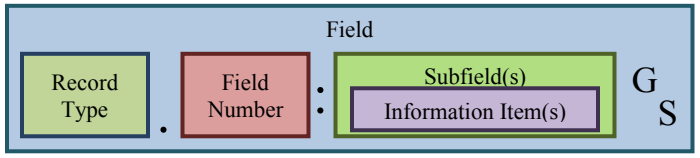
AN-2011の一般的なフィールド構造を示す図です。「Field」と書かれた大きな枠の中に、左から「Record Type」の枠、ピリオド「.」、「Field Number」の枠、コロン「:」、「Subfield(s)」の枠が並び、Subfield(s) の枠の中に「Information Item(s)」の枠があります。フィールドの末尾には、上付きの「G」と下付きの「S」で表したグループ区切り文字があります。
Figure 2.16: Generic AN-2011 Field Structure
図 2.16: 汎用的な AN-2011 のフィールド構造
The data for each field is held in the Information Item. However, results of tests can be stored at any level (Information Item, Subfield, Field, Record, and Transaction) as needed to align with the ANSI/NIST-ITL 1-2011 field definitions.
各フィールドのデータは情報項目に保持されます。ただし、試験結果は、ANSI/NIST-ITL 1-2011 のフィールド定義に合わせる必要に応じて、任意のレベル（情報項目、サブフィールド、フィールド、レコード、トランザクション）に保存できます。
For example, a field defined with no subfields:
たとえば、サブフィールドを持たないと定義されたフィールド:
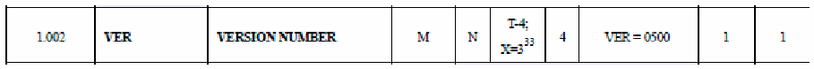
AN-2011のフィールド定義表から、フィールド 1.002 の行を抜き出した図です。各列は「1.002」「VER」「VERSION NUMBER」「M」「N」「T-4; X=3³³」「4」「VER = 0500」「1」「1」です。
Underlying structure: 1.002:0500GS (FN: IIGS )
基になる構造: 1.002:0500GS (FN: IIGS )
Field 1.002 is represented in the software internally as shown in Fig. 2-17:
フィールド 1.002 は、ソフトウェア内部では図 2-17 のように表されます。
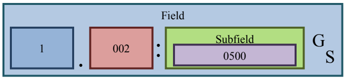
フィールド 1.002 を例にしたAN-2011のフィールド構造の図です。「Field」と書かれた大きな枠の中に、「1」の枠、ピリオド「.」、「002」の枠、コロン「:」、「Subfield」の枠が並び、Subfield の枠の中に「0500」の枠があります。末尾には上付きの「G」と下付きの「S」で表したグループ区切り文字があります。
Figure 2.17: AN-2011 Field Structure Example
図 2.17: AN-2011 のフィールド構造の例
Field 1.002 is displayed in the CTA as:
フィールド 1.002 は、CTA では次のように表示されます。
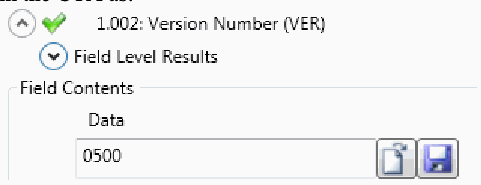
適合性試験アーキテクチャ（CTA）でのフィールド 1.002 の表示画面です。「1.002: Version Number (VER)」の横に緑のチェック印があり、その下に展開できる「Field Level Results」、「Field Contents」の欄に「Data」のテキストボックス（値「0500」）と小さなボタン2つがあります。
This matches the ANSI/NIST-ITL 1-2011 Field definition (note that it does not mention the Subfield or Information Item).
これは ANSI/NIST-ITL 1-2011 のフィールド定義と一致します（サブフィールドや情報項目には触れていないことに注意してください）。
2.4.5 BioCTS 2012 for AN-2011 Testing Exceptions
2.4.5 AN-2011 向けの BioCTS 2012 の試験における例外
Any tests implemented in code that differ from the requirements defined in the ANSI/NIST ITL-2011, or any requirements untested are considered “exceptions”. The CTS contains two types of test assertion exceptions: Record-Type Limitations and Requirement Limitations.
ANSI/NIST ITL-2011 で定義された要件と異なる形でコードに実装された試験や、試験されていない要件は、「例外」と見なされます。CTS には、テストアサーションの例外が 2 種類あります。レコードタイプの制限と、要件の制限です。
2.4.5.1 Record Type Limitations
2.4.5.1 レコードタイプの制限
The CTS provides parsing and IDC support for all Record Types in a given transaction and also tests for any deprecated or legacy values. However, only a selected subset of Record Types is fully supported and tested by the CTS:
CTS は、あるトランザクション内のすべてのレコードタイプについて、構文解析と IDC のサポートを提供し、非推奨または旧式の値についても試験します。ただし、CTS が完全にサポートし試験するのは、選択されたレコードタイプのサブセットだけです。
•Type-1: Transaction Information
•タイプ 1: トランザクション情報
•Type-4: High-resolution grayscale fingerprint image
•タイプ 4: 高解像度グレースケール指紋画像
•Type-10: Face, other body part, or scar, mark tattoo (SMT) image
•タイプ 10: 顔、その他の身体部位、または傷・痣・刺青（SMT）の画像
•Type-13: Variable-resolution latent friction ridge image
•タイプ 13: 可変解像度の潜在摩擦隆線画像
•Type-14: Variable-resolution fingerprint image
•タイプ 14: 可変解像度の指紋画像
•Type-15: Variable-resolution palm print image
•タイプ 15: 可変解像度の掌紋画像
•Type-17: Iris image
•タイプ 17: 虹彩画像
Records in any Transaction that include Record Types other than the ones listed above are detected and their presence (including the location within the transaction) and length are reported in the test results.
上記以外のレコードタイプを含む任意のトランザクションのレコードは検出され、その存在（トランザクション内の位置を含む）と長さが試験結果で報告されます。
In addition, some fields are supported for all Record Types due to structural requirements and inter-field dependencies:
さらに、構造上の要件とフィールド間の依存関係のため、一部のフィールドはすべてのレコードタイプでサポートされています。
•Field xx.001-Record header. (All Record Types)
•フィールド xx.001 - レコードヘッダー（すべてのレコードタイプ）
•Field xx.002-Information designation character / IDC (All Record Types)
•フィールド xx.002 - 情報指定文字 / IDC（すべてのレコードタイプ）
•Field xx.016-Segments / SEG (Record Types 20 and 21)
•フィールド xx.016 - セグメント / SEG（レコードタイプ 20 と 21）
•Field xx.021-SRN/ACN (Record Types 20 and 21)
•フィールド xx.021 - SRN/ACN（レコードタイプ 20 と 21）
•Field xx.995-Associated Context / ASC (Record Types 10 and Above)
•フィールド xx.995 - 関連コンテキスト / ASC（レコードタイプ 10 以上）
•Field xx.997-Source Representation / SOR (Record Types 10 and Above)
•フィールド xx.997 - 元の表現 / SOR（レコードタイプ 10 以上）
2.4.5.2 Requirement Limitations:
2.4.5.2 要件の制限
In some cases, testing a requirement was not possible without additional resources or information that was not obtained in time for inclusion in this version of the CTS:
場合によっては、追加のリソースや情報がなければ要件を試験できず、それらをこの版の CTS に含められる時期までに入手できませんでした。
•Domain Names/ Application Profile Specifications: requires referencing of evolving registrar databases. See ANSI/NIST ITL-2011 Sec. 5.3.2 and Sec. 6.
•ドメイン名 / アプリケーションプロファイル仕様: 進化し続けるレジストラのデータベースの参照が必要です。ANSI/NIST ITL-2011 の 5.3.2 項と第 6 節を参照してください。
•Alternate Character Sets: Further research is required. Support for “user-defined” character set is not feasible. See ANSI/NIST ITL-2011 Sec. 5.6.
•代替文字セット: さらなる調査が必要です。「ユーザー定義」の文字セットのサポートは実現可能ではありません。ANSI/NIST ITL-2011 の 5.6 節を参照してください。
•Alternate Coordinate System: Further research required. Support for “user-defined” systems is not feasible. See ANSI/NIST ITL-2011 Sec. 7.7.3.
•代替座標系: さらなる調査が必要です。「ユーザー定義」の座標系のサポートは実現可能ではありません。ANSI/NIST ITL-2011 の 7.7.3 項を参照してください。
•Subject Acquisition Profiles: Some SAP/FAP/IAP level contain Level 3 requirements (image capture conditions). See ANSI/NIST ITL-2011 Sec. 7.7.5.
•被写体取得プロファイル: 一部の SAP/FAP/IAP レベルにはレベル 3 の要件（画像取得条件）が含まれます。ANSI/NIST ITL-2011 の 7.7.5 項を参照してください。
•ASEG-Open and Closed Paths for Polygons: Further research required. See ANSI/NIST ITL-2011 Sec. 7.8.
•ポリゴンの開パスおよび閉パスに関する ASEG: さらなる調査が必要です。ANSI/NIST ITL-2011 の 7.8 節を参照してください。
3 References
3 参考文献
The list below provides references for this publication.
本刊行物の参考文献を以下に挙げます。
[1] ISO/IEC JTC 1/SC 37 Web page http://www.iso.org/iso/jtc1_sc37_home (accessed 8/20/12).
[1] ISO/IEC JTC 1/SC 37 Web page http://www.iso.org/iso/jtc1_sc37_home (accessed 8/20/12).
[2] ANSI/NIST-ITL Standard Web page http://www.nist.gov/itl/iad/ig/ansi_standard.cfm (accessed 8/20/12).
[2] ANSI/NIST-ITL Standard Web page http://www.nist.gov/itl/iad/ig/ansi_standard.cfm (accessed 8/20/12).
[3] F. L. Podio, D. Yaga, and C. J. McGinnis, Editors, NIST Special Publication 500-295, Conformance Testing Methodology for ANSI/NIST-ITL 1-2011, Data Format for the Interchange of Fingerprint, Facial & Other Biometric Information (2012).
[3] F. L. Podio, D. Yaga, and C. J. McGinnis, Editors, NIST Special Publication 500-295, Conformance Testing Methodology for ANSI/NIST-ITL 1-2011, Data Format for the Interchange of Fingerprint, Facial & Other Biometric Information (2012).
[4] Microsoft® Download Center web page http://www.microsoft.com/en-us/download/default.aspx (accessed 8/27/12).
[4] Microsoft® Download Center web page http://www.microsoft.com/en-us/download/default.aspx (accessed 8/27/12).
[5] P. Grother and W. Salamon, NIST Special Publication 800-76-2, Second Draft Biometric Data Specification for Personal Identity Verification, June 2012.
[5] P. Grother and W. Salamon, NIST Special Publication 800-76-2, Second Draft Biometric Data Specification for Personal Identity Verification, June 2012.
Annex A – Roadmaps of Biometric Data Interchange Formats and Conformance Testing Methodologies
附属書 A – 生体データ交換フォーマットと適合性試験方法論のロードマップ
A.1 First Generation of ISO/IEC Data Interchange Format Standards
A.1 ISO/IEC データ交換フォーマット標準の第1世代
Figure A-1 depicts the first generation (1G) of biometric data interchange formats developed by ISO/IEC JTC 1/SC 37-Biometrics for a number of biometric modalities and their associated conformance testing methodology standards. The publication date of each of the standards is included. The development stage is indicated for the standards not yet published. The biometric standards of the first generation were specified in binary encoding as shown in the picture.
図 A-1 は、ISO/IEC JTC 1/SC 37-Biometrics が多数の生体モダリティ向けに策定した生体データ交換フォーマットの第1世代（1G）と、それに関連する適合性試験方法論標準を示しています。各標準の発行日を示しています。まだ発行されていない標準については、策定段階を示しています。第1世代の生体標準は、図に示すとおり、バイナリエンコーディングで規定されていました。
![Roadmap of first-generation ISO/IEC biometric data interchange formats and their conformance testing methodologies. Top bar: "ISO/IEC 19794-1:2006 – Part 1: Framework", with format parts below it (all marked "Binary encoding"): "-2: 2005 Finger minutiae / AMD 1 :2010 (minutia descript.)", "-3: 2006 Finger pattern spectral", "-4: 2005 Finger image", "-5: 2005 Face image / AMD 2:2009 (3D)", "-6: 2005 Iris image", "-7: 2007 Signature sign", "-8: 2006 Finger pattern skeletal", "-9: 2007 Vascular image", "-10: 2007 Hand geometry silhouette". Second bar: "ISO/IEC 29109-1:2009 – Part 1: Generalized conformance testing methodology (CTM)", with CTM parts below it (note "CTMs are separate standards"): "-2: 2010", "-4: 2010", "-5: 2012 (1ST rev)/ 2ND rev DIS", "-6: 2011", "-7: 2011", "-8: 2011", "-9: 2011", "-10: 2010". A red box "-2: AMD 1 5th WD" is labelled "Level 3 (semantic) CTM". Legend: AMD: Amendment; WD: Working Draft; CD: Committee Draft; DIS: Draft International Standard.](assets/ir-7877/p0036-figure-01.png)
第1世代のISO/IEC生体データ交換フォーマットと、その適合性試験方法論のロードマップです。上段の帯は「ISO/IEC 19794-1:2006 – 第1部：枠組み」で、その下にフォーマット各部（すべて「バイナリエンコーディング」）が並びます：「-2: 2005 指紋マニューシャ / AMD 1 :2010（マニューシャの記述）」「-3: 2006 指紋隆線パターンのスペクトル」「-4: 2005 指紋画像」「-5: 2005 顔画像 / AMD 2:2009（3D）」「-6: 2005 虹彩画像」「-7: 2007 筆記署名」「-8: 2006 指紋隆線パターンの骨格」「-9: 2007 血管画像」「-10: 2007 手の形状シルエット」。2段目の帯は「ISO/IEC 29109-1:2009 – 第1部：一般化された適合性試験方法論（CTM）」で、その下にCTM各部（注記「CTMは個別の標準です」）が並びます：「-2: 2010」「-4: 2010」「-5: 2012（第1改訂）/ 第2改訂 DIS」「-6: 2011」「-7: 2011」「-8: 2011」「-9: 2011」「-10: 2010」。赤い枠「-2: AMD 1 5th WD」には「レベル3（意味的）CTM」と記されています。凡例：AMD：改訂、WD：作業原案、CD：委員会原案、DIS：国際規格案。
Figure A.1: 1G Biometric Data Formats and Associated CTMs
図 A.1: 第1世代の生体データフォーマットと関連する CTM
A.2 Second Generation of ISO/IEC Data Interchange Format Standards
A.2 ISO/IEC データ交換フォーマット標準の第2世代
Figure A-2 depicts the same information as Figure A-1 but for the second generation (2G) of biometric data interchange format standards and associated CTM standards. Although the first generation of CTM standards are separate documents, the associated CTMs for the 2G data interchange formats are developed as Amendments to the data interchange format standards. A shown in the figure, most of the data interchange formats specified in binary encoding has been published. The Subcommittee is also developing XML encoding versions for a number of these standards.
図 A-2 は、図 A-1 と同じ情報を、生体データ交換フォーマット標準の第2世代（2G）と関連する CTM 標準について示しています。第1世代の CTM 標準は別個の文書ですが、2G データ交換フォーマットに関連する CTM は、データ交換フォーマット標準の修正版として策定されています。図に示すとおり、バイナリエンコーディングで規定されたデータ交換フォーマットの大半は発行済みです。小委員会は、これらの標準の多くについて、XML エンコーディング版も策定しています。
![Roadmap of second-generation ISO/IEC biometric data interchange formats and their conformance testing methodologies. Top bars: "ISO/IEC 19794-1:2011, Part 1 Framework" (binary encoding, blue) and "19794-1:2011 Framework XML – 2nd PDAM 2" (XML encoding, red). Binary-encoding parts (blue): "-2: 2011 Finger minutiae", "-4: 2011 Finger image", "-5: 2011 Face image", "-6: 2011 Iris image", "-7: DIS Signature Sign time series", "-8: 2011 Finger pattern skeletal", "-9: 2011 Vascular image", "-11: FDIS Signature sign proc. dynamic". XML-encoding parts (red): "-2: 2011 AMD 2 2nd WD", "-4: 2011 AMD 2 2nd WD", "-5: 2011 AMD 2 2nd WD", "-6: 2011 AMD 2 2nd WD", "-7: 2011 AMD 1 2nd WD", "-9: 2011 AMD 2 2nd WD", "-13: Voice 3rd WD", "-14: DNA DIS". Bottom bar: "ISO/IEC 19794-1rev AMD 1 Conformance testing methodology (bin. encoding) – FDAM 1", with CTM parts: "-2: FDAM 1", "-4: FDAM 1", "-5: DAM 1", "-6: 4th PDAM 1", "-8: DAM 1", "-9: AMD 1", "-11: DAM 1", "-13: WD", "-14: 3rd PDAM 1". Legend: "Binary encoding" (blue), "XML encoding" (red).](assets/ir-7877/p0037-figure-01.png)
第2世代のISO/IEC生体データ交換フォーマットと、その適合性試験方法論のロードマップです。上段の帯は「ISO/IEC 19794-1:2011, 第1部 枠組み」（バイナリエンコーディング、青）と「19794-1:2011 枠組み XML – 第2 PDAM 2」（XMLエンコーディング、赤）です。バイナリエンコーディングの各部（青）：「-2: 2011 指紋マニューシャ」「-4: 2011 指紋画像」「-5: 2011 顔画像」「-6: 2011 虹彩画像」「-7: DIS 署名データの時系列」「-8: 2011 指紋隆線パターンの骨格」「-9: 2011 血管画像」「-11: FDIS 動的な署名筆記処理データ」です。XMLエンコーディングの各部（赤）：「-2: 2011 AMD 2 第2 WD」「-4: 2011 AMD 2 第2 WD」「-5: 2011 AMD 2 第2 WD」「-6: 2011 AMD 2 第2 WD」「-7: 2011 AMD 1 第2 WD」「-9: 2011 AMD 2 第2 WD」「-13: 音声 第3 WD」「-14: DNA DIS」です。下段の帯は「ISO/IEC 19794-1rev AMD 1 適合性試験方法論（バイナリエンコーディング）– FDAM 1」で、CTM各部は「-2: FDAM 1」「-4: FDAM 1」「-5: DAM 1」「-6: 第4 PDAM 1」「-8: DAM 1」「-9: AMD 1」「-11: DAM 1」「-13: WD」「-14: 第3 PDAM 1」です。凡例：「バイナリエンコーディング」（青）、「XMLエンコーディング」（赤）。
Figure A.2: 2G Biometric Data Formats and Associated CTMs
図 A.2: 第2世代の生体データフォーマットと関連する CTM
Annex B – Roadmaps of Conformance Test Tools for Biometric Data Interchange Formats
附属書 B – 生体データ交換フォーマットの適合性試験ツールのロードマップ
B.1 CTSs Designed to Test Implementations of AN-2011 Transactions
B.1 AN-2011 トランザクションの実装を試験するよう設計された CTS
Figure B.1 depicts the current roadmap of conformance tool development for AN-2011 Transactions. Plans are underway to expand the development of BioCTS 2012 to include testing of other Record Types. Currently, the test architecture supports testing of Transactions specified in Traditional Encoding. The roadmap includes extending the work to accommodate required testing of Transactions in the National Information Exchange Model (NIEM)-XML Encoding.
図 B.1 は、AN-2011 トランザクション向けの適合性試験ツール開発の現在のロードマップを示しています。BioCTS 2012 の開発を拡大し、他のレコードタイプの試験を含める計画が進行中です。現在、試験アーキテクチャは、従来型エンコーディングで規定されたトランザクションの試験をサポートしています。ロードマップには、National Information Exchange Model（NIEM）-XML エンコーディングのトランザクションに必要な試験に対応するよう作業を拡張することが含まれています。
![Roadmap of conformance test suites (CTSs) for AN-2011 transactions. Top bar: "Record Types in ANSI/NIST-ITL 1-2011 Transactions*". Row "Traditional Encoding": released (green) "Type 1: Transaction Information", "Type 4: High-Resolution Grayscale Fingerprint Image", "Type 10: Face, Other Body Part, or Scar, Mark Tattoo (SMT) Image", "Type 13: Variable-Resolution Latent Friction Ridge Image", "Type 14: Variable-Resolution Fingerprint Image", "Type 15: Variable-Resolution Palmprint Image", "Type 17: Iris Image"; planned/under development (yellow) "Types: 9: Minutiae, 11: Voice, 12: Dental, 18: DNA, …". Row "NIEM-XML Encoding": planned (yellow) "All Record Types". Note: "(*) Transactions under test can include Record Types other than those shown above. Presence/record length is reported but no conformance tests on these records are performed." Legend: "Released" (green), "Planned / Under Development" (yellow).](assets/ir-7877/p0038-figure-01.png)
AN-2011トランザクション向け適合性試験スイート（CTS）のロードマップです。上段の帯は「ANSI/NIST-ITL 1-2011トランザクションのレコードタイプ*」です。「従来型エンコーディング」の行には、公開済み（緑）の「タイプ1：トランザクション情報」「タイプ4：高解像度グレースケール指紋画像」「タイプ10：顔、その他の身体部位、または傷跡・痕跡・入れ墨（SMT）画像」「タイプ13：可変解像度潜在指紋画像」「タイプ14：可変解像度指紋画像」「タイプ15：可変解像度掌紋画像」「タイプ17：虹彩画像」と、計画中／開発中（黄）の「タイプ：9：マニューシャ、11：音声、12：歯科、18：DNA、…」が並びます。「NIEM-XMLエンコーディング」の行は計画中（黄）の「すべてのレコードタイプ」です。注記：「(*) 試験対象のトランザクションには、上記以外のレコードタイプが含まれる場合があります。これらのレコードについては、存在の有無／レコード長が報告されますが、適合性試験は実施されません。」凡例：「公開済み」（緑）、「計画中／開発中」（黄）。
Figure B.1: Roadmap of CTSs for AN-2011 Transactions
図 B.1: AN-2011 トランザクション向け CTS のロードマップ
B.2 CTSs Designed to Test Implementations of ISO/IEC Data Interchange Formats
B.2 ISO/IEC データ交換フォーマットの実装を試験するよう設計された CTS
Figure B.2 depicts the current roadmap for conformance test tools development for the ISO/IEC 19794-x biometric data interchange standards. CTSs designed to test implementations of the first generation of data formats were migrated this year to run under the advance conformance test architecture that is part of BioCTS 2012. Existing CTSs test binary encoding implementations. Further work will be focused on developing CTSs to test implementations of data formats for other modalities encoded in both binary and XML.
図 B.2 は、ISO/IEC 19794-x 生体データ交換標準向けの適合性試験ツール開発の現在のロードマップを示しています。第1世代のデータフォーマットの実装を試験するよう設計された CTS は、今年、BioCTS 2012 の一部である高度な適合性試験アーキテクチャ上で実行できるよう移行されました。既存の CTS は、バイナリエンコーディング実装を試験します。今後は、バイナリと XML の両方でエンコードされた他のモダリティのデータフォーマット実装を試験する CTS の開発に重点が置かれます。
![Roadmap of CTSs for ISO/IEC 19794-x data interchange formats. Top bar: "ISO/IEC 19794-x Biometric Data Interchange Format Standards". Three arrows: "CTSs to test Implementations of “1G” standards" (Binary encoded): released "Part 2: 2005 Finger Minutia", "Part 4: 2005 Finger Image", "Part 5: 2005 Face Image"; "CTSs to test Implementations of “2G” standards" (Binary encoded): released "Part 2: 2011 Finger Minutia", "Part 4: 2011 Finger Image", "Part 6: 2011 Iris Image", planned "Part 5: 2011 Face Image"; "CTSs to test Implementations of “2G” standards" (XML encoded): planned "Part 2: 2011 Finger Minutia", "Part 4: 2011 Finger Image", "Part 5: 2011 Face Image", "Part 6: 2011 Iris Image", "Part 14: 201x DNA data". Legend: "Released" (green), "Planned / Under Development" (yellow).](assets/ir-7877/p0039-figure-01.png)
ISO/IEC 19794-xデータ交換フォーマット向けCTSのロードマップです。上段の帯は「ISO/IEC 19794-x生体データ交換フォーマット標準」です。3本の矢印があります。「第1世代標準の実装を試験するCTS」（バイナリエンコーディング）には公開済みの「第2部：2005 指紋マニューシャ」「第4部：2005 指紋画像」「第5部：2005 顔画像」があります。「第2世代標準の実装を試験するCTS」（バイナリエンコーディング）には公開済みの「第2部：2011 指紋マニューシャ」「第4部：2011 指紋画像」「第6部：2011 虹彩画像」と、計画中の「第5部：2011 顔画像」があります。「第2世代標準の実装を試験するCTS」（XMLエンコーディング）には計画中の「第2部：2011 指紋マニューシャ」「第4部：2011 指紋画像」「第5部：2011 顔画像」「第6部：2011 虹彩画像」「第14部：201x DNAデータ」があります。凡例：「公開済み」（緑）、「計画中／開発中」（黄）。
Figure B.2: Roadmap of CTSs for ISO/IEC Data Interchange Formats
図 B.2: ISO/IEC データ交換フォーマット向け CTS のロードマップ
B.3 CTS Designed to Test Implementations of PIV profiles specified in NIST SP 800-76-2
B.3 NIST SP 800-76-2 で規定された PIV プロファイルの実装を試験するよう設計された CTS
Second Draft NIST Special Publication 800-76-2 was open for public comment until Noon on 4 August 15, 2012. Two CTSs were developed to test implementations of the ISO/IEC 19794-6:2011 profile. Additional CTSs are planned which will be designed to test implementations of national standards published by the American National Standards Institute (ANSI) and developed by Technical Committee M1 – Biometrics of the InterNational Committee for Information Technology Standards (INCITS). These profiles are also specified in NIST SP 800-76-2. Changes to the existing CTS will be made if technical changes to the ISO/IEC 19794-6:2001 profiles are made as a result of the public review.
NIST Special Publication 800-76-2 の第2ドラフトは、2012年8月4日午後12時（正午）までパブリックコメントを受け付けていました。ISO/IEC 19794-6:2011 プロファイルの実装を試験する CTS が二つ開発されました。米国規格協会（ANSI）が発行し、InterNational Committee for Information Technology Standards（INCITS）の技術委員会 M1 – Biometrics が策定した国内標準の実装を試験する追加の CTS が計画されています。これらのプロファイルも NIST SP 800-76-2 で規定されています。パブリックレビューの結果、ISO/IEC 19794-6:2001 プロファイルに技術的な変更が加えられた場合は、既存の CTS にも変更が加えられます。
![Roadmap of CTSs for PIV profiles. Top bar: "PIV Profiles Defined in NIST SP 800-76-2*". Arrow "CTSs to test PIV profiles of ISO/IEC standards": released "CBEFF Header of the PIV 19794-6: 2011 Profile", "ISO/IEC 19794-6: 2011 Iris Image (On-Card)", "ISO/IEC 19794-6: 2011 Iris Image (Off-Card)", "CBEFF Opaque Security Block". Arrow "CTSs to test PIV profiles of ANSI/INCITS standards": planned "ANSI / INCITS 378: 2004 Finger Minutiae", "ANSI / INCITS 381: 2004 Finger Image", "ANSI / INCITS 385: 2004 Face Image". Legend: "Released" (green), "Planned / Under Development" (yellow).](assets/ir-7877/p0040-figure-01.png)
PIVプロファイル向けCTSのロードマップです。上段の帯は「NIST SP 800-76-2で定義されたPIVプロファイル*」です。「ISO/IEC標準のPIVプロファイルを試験するCTS」の矢印には、公開済みの「PIV 19794-6: 2011プロファイルのCBEFFヘッダー」「ISO/IEC 19794-6: 2011 虹彩画像（カード内）」「ISO/IEC 19794-6: 2011 虹彩画像（カード外）」「CBEFF不透明セキュリティブロック」があります。「ANSI/INCITS標準のPIVプロファイルを試験するCTS」の矢印には、計画中の「ANSI / INCITS 378: 2004 指紋マニューシャ」「ANSI / INCITS 381: 2004 指紋画像」「ANSI / INCITS 385: 2004 顔画像」があります。凡例：「公開済み」（緑）、「計画中／開発中」（黄）。
Figure B.3: Roadmap of CTSs for PIV Profiles Defined in NIST SP 800-76-2
図 B.3: NIST SP 800-76-2 で定義された PIV プロファイル向け CTS のロードマップ